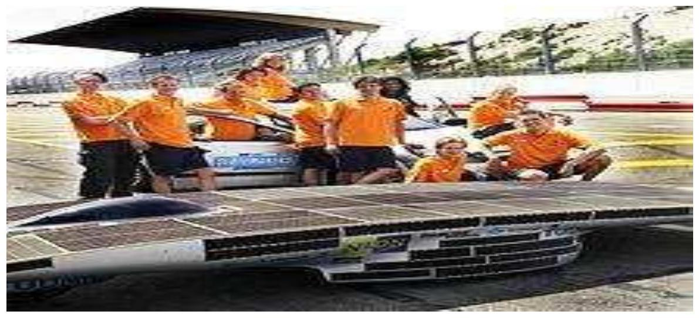

MOMBASA TECHNICAL TRAINING INSTITUTE
(MTTI)
DEPARTMENT OF ELECTRICAL & ELECTRONICSENGINEERING
SOLAR INSTALLATIONTECHNOLOGY (SIT) Lecture Notes
By
Patrick Kitheka
©2016
Solar energy
Solar energy is radiant light and heat from the sun harnessed using a range of ever-evolving technologies such as solar heating, solar photovoltaics, solar thermal energy, solar architecture and artificial photosynthesis.
It is an important source of renewable energy and its technologies are broadly characterized as either passive solar or active solar depending on the way they capture and distribute solar energy or convert it into solar power. Active solar techniques include the use of photovoltaic systems, concentrated solar power and solar water heating to harness the energy. Passive solar techniques include orienting a building to the Sun, selecting materials with favorable thermal mass or light dispersing properties, and designing spaces that naturally circulate air. It will increase countries' energy security through reliance on an indigenous, inexhaustible and mostly import-independent resource, enhance sustainability, reduce pollution, lower the costs of mitigating global warming, and keep fossil fuel prices lower than otherwise. These advantages are global.
Energy from the Sun
About half the incoming solar energy reaches the Earth's surface. The Earth receives 174 petawatts (PW) of incoming solar radiation (insolation) at the upper atmosphere. Approximately $30 \%$ is reflected back to space while the rest is absorbed by clouds, oceans and land masses. The spectrum of solar light at the Earth's surface is mostly spread across the visible and near-infrared ranges with a small part in the near-ultraviolet. Earth's land surface, oceans and atmosphere absorb solar radiation, and this raises their temperature. Warm air containing evaporated water from the oceans rises, causing atmospheric circulation or convection. When the air reaches a high altitude, where the temperature is low, water vapor condenses into clouds, which rain onto the Earth's surface, completing the water cycle.
The latent heat of water condensation amplifies convection, producing atmospheric phenomena such as wind, cyclones and anti-cyclones. Sunlight absorbed by the oceans and land masses keeps the surface at an average temperature of $14^{\circ} \mathrm{C}$. By photosynthesis green plants convert solar energy into chemical energy, which produces food, wood and the biomass from which fossil fuels are derived.
Yearly Solar fluxes & Human Energy Consumption (2010)
| Solar | $3,850,000 \mathrm{EJ}$ |
| Wind | $2,250 \mathrm{EJ}$ |
| Biomass potential | $\sim 200 \mathrm{EJ}$ |
| Primary energy use (2010) | 539 EJ |
| Electricity (2010) | $\sim 67 \mathrm{EJ}$ |
The total solar energy absorbed by Earth's atmosphere, oceans and land masses is approximately 3,850,000 exajoules (EJ) per year. In 2002, this was more energy in one hour than the world used in one year. Photosynthesis captures approximately 3,000 EJ per year in biomass. The technical potential available from biomass is from 100-300 EJ/year. The amount of solar energy reaching the surface of the planet is so vast that in one year it is about twice as much as will ever be obtained from all of the Earth's non-renewable resources of coal, oil, natural gas, and mined uranium combined.
Early solar energy commercial adaption
In 1897, Frank Shuman, a U.S. inventor, engineer and solar energy pioneer built a small demonstration solar engine that worked by reflecting solar energy onto square boxes filled with ether, which has a lower boiling point than water, and were fitted internally with black pipes which in turn powered a steam engine. In 1908 Shuman formed the Sun Power Company with the intent of building larger solar power plants. He, along with his technical advisor A.S.E. Ackermann and British physicist Sir Charles Vernon Boys, developed an improved system using mirrors to reflect solar energy upon collector boxes, increasing heating capacity to the extent that water could now be used instead of ether. Shuman then constructed a full-scale steam engine powered by low-pressure water, enabling him to patent the entire solar engine system by 1912.
Shuman built the world's first solar thermal power station in Maadi, Egypt between 1912 and 1913. Shuman's plant used parabolic troughs to power a 45-52 kilowatt (60-70 H.P.) engine that pumped more than 22,000 litres of water per minute from the Nile River to adjacent cotton fields. Although the outbreak of World War I and the discovery of cheap oil in the 1930s discouraged the advancement of solar energy, Shuman's vision and basic design were resurrected in the 1970s with a new wave of interest in solar thermal energy. In 1916 Shuman was quoted in the media advocating solar energy's utilization, saying: "We have proved the commercial profit of sun power in the tropics and have more particularly proved that after our stores of oil and coal are exhausted the human race can receive unlimited power from the rays of the sun".
Applications of solar technology
Average insolation for most people is from 150 to $300 \mathrm{~W} / \mathrm{m}^{2}$ or 3.5 to $7.0 \mathrm{kWh} / \mathrm{m}^{2} /$ day. Solar energy refers primarily to the use of solar radiation for practical ends. However, all renewable energies, other than geothermal and tidal, derive their energy from the sun. Solar technologies are broadly characterized as either passive or active depending on the way they capture, convert and distribute sunlight. Active solar techniques use photovoltaic panels, pumps, and fans to convert sunlight into useful outputs. Passive solar techniques include selecting materials with favorable thermal properties, designing spaces that naturally circulate air, and referencing the position of a building to the Sun. Active solar technologies increase the supply of energy and are considered supply side technologies, while passive solar technologies reduce the need for alternate resources and are generally considered demand side technologies.
Architecture and urban planning
Darmstadt University of Technology in Germany won the 2007 Solar Decathlon in Washington, D.C. with this passive house designed specifically for the humid and hot subtropical climate. Sunlight has influenced building design since the beginning of architectural history. Advanced solar architecture and urban planning methods were first employed by the Greeks and Chinese, who oriented their buildings toward the south to provide light and warmth. The common features of passive solar architecture are orientation relative to the Sun, compact proportion, selective shading and thermal mass. When these features are tailored to the local climate and environment they can produce well-lit spaces that stay in a comfortable temperature range. Socrates' Megaron House is a classic example of passive solar design. The most recent approaches to solar design use computer modeling tying together solar lighting, heating and ventilation systems in an integrated solar design package. Active solar equipment such as pumps, fans and switchable windows can complement passive design and improve system performance.
Urban heat islands (UHI) are metropolitan areas with higher temperatures than that of the surrounding environment. The higher temperatures are a result of increased absorption of the Solar light by urban materials such as asphalt and concrete, which have lower albedos and higher heat capacities than those in the natural environment. A straightforward method of counteracting the UHI effect is to paint buildings and roads white and plant trees.
Agriculture and horticulture
Greenhouses like these in the Westland municipality of the Netherlands grow vegetables, fruits and flowers. Agriculture and horticulture seek to optimize the capture of solar energy in order to optimize the productivity of plants. Techniques such as timed planting cycles, tailored row orientation, staggered heights between rows and the mixing of plant varieties can improve crop yields.
While sunlight is generally considered a plentiful resource, the exceptions highlight the importance of solar energy to agriculture. During the short growing seasons of the Little Ice Age, French and English farmers employed fruit walls to maximize the collection of solar energy. These walls acted as thermal masses and accelerated ripening by keeping plants warm.
Early fruit walls were built perpendicular to the ground and facing south, but over time, sloping walls were developed to make better use of sunlight. In 1699, Nicolas Fatio de Duillier even suggested using a tracking mechanism which could pivot to follow the Sun. Applications of solar energy in agriculture aside from growing crops include pumping water, drying crops, brooding chicks and drying chicken manure. More recently the technology has been embraced by vinters, who use the energy generated by solar panels to power grape presses.
Greenhouses convert solar light to heat, enabling year-round production and the growth of specialty crops and other plants not naturally suited to the local climate. Primitive greenhouses were first used during Roman times to produce cucumbers year-round for the Roman emperor Tiberius. The first modern greenhouses were built in Europe in the 16th century to keep exotic plants brought back from explorations abroad. Greenhouses remain an important part of horticulture today, and plastic transparent materials have also been used to similar effect in polytunnels and row covers.
Transport and reconnaissance
Australia hosts the World Solar Challenge where solar cars like the Nuna3 race through a $3,021 \mathrm{~km}(1,877 \mathrm{mi})$ course from Darwin to Adelaide. Development of a solar-powered car has been an engineering goal since the 1980s. The World Solar Challenge is a biannual solarpowered car race, where teams from universities and enterprises compete over 3,021 kilometres $(1,877 \mathrm{mi})$ across central Australia from Darwin to Adelaide. In 1987, when it was founded, the winner's average speed was 67 kilometres per hour ( 42 mph ) and by 2007 the winner's average speed had improved to 90.87 kilometres per hour ( 56.46 mph ).
Some vehicles use solar panels for auxiliary power, such as for air conditioning, to keep the interior cool, thus reducing fuel consumption. In 1975, the first practical solar boat was constructed in England. By 1995, passenger boats incorporating PV panels began appearing and are now used extensively. In 1996, Kenichi Horie made the first solar powered crossing of the Pacific Ocean, and the sun21 catamaran made the first solar powered crossing of the Atlantic Ocean in the winter of 2006-2007. There were plans to circumnavigate the globe in 2010.
In 1974, the unmanned AstroFlight Sunrise plane made the first solar flight. On 29 April 1979, the Solar Riser made the first flight in a solar-powered, fully controlled, man carrying flying machine, reaching an altitude of 40 feet ( 12 m ). In 1980, the Gossamer Penguin made the first piloted flights powered solely by photovoltaics. This was quickly followed by the Solar Challenger which crossed the English Channel in July 1981. In 1990 Eric Scott Raymond in 21 hops flew from California to North Carolina using solar power.
Developments then turned back to unmanned aerial vehicles (UAV) with the Pathfinder (1997) and subsequent designs, culminating in the Helios which set the altitude record for a non-rocketpropelled aircraft at 29,524 metres ( $96,864 \mathrm{ft}$ ) in 2001 . The Zephyr, developed by BAE Systems, is the latest in a line of record-breaking solar aircraft, making a 54-hour flight in 2007, and month-long flights were envisioned by 2010.
A solar balloon is a black balloon that is filled with ordinary air. As sunlight shines on the balloon, the air inside is heated and expands causing an upward buoyancy force, much like an artificially heated hot air balloon. Some solar balloons are large enough for human flight, but usage is generally limited to the toy market as the surface-area to payload-weight ratio is relatively high.
Solar thermal
Solar thermal technologies can be used for water heating, space heating, space cooling and process heat generation.
i. Water heating
Solar hot water systems use sunlight to heat water. In low geographical latitudes (below 40 degrees) from 60 to $70 \%$ of the domestic hot water use with temperatures up to $60^{\circ} \mathrm{C}$ can be provided by solar heating systems. The most common types of solar water heaters are evacuated tube collectors (44%) and glazed flat plate collectors (34%) generally used for domestic hot water; and unglazed plastic collectors (21%) used mainly to heat swimming pools.
As of 2007, the total installed capacity of solar hot water systems is approximately 154 GW . China is the world leader in their deployment with 70 GW installed as of 2006 and a long term goal of 210 GW by 2020. Israel and Cyprus are the per capita leaders in the use of solar hot water systems with over $90 \%$ of homes using them. [53] In the United States, Canada and Australia heating swimming pools is the dominant application of solar hot water with an installed capacity of 18 GW as of 2005.
ii. Heating, cooling and ventilation
In the United States, heating, ventilation and air conditioning (HVAC) systems account for $30 \%$ (4.65 EJ) of the energy used in commercial buildings and nearly 50% (10.1 EJ) of the energy used in residential buildings. Solar heating, cooling and ventilation technologies can be used to offset a portion of this energy.
Thermal mass is any material that can be used to store heat-heat from the Sun in the case of solar energy. Common thermal mass materials include stone, cement and water. Historically they have been used in arid climates or warm temperate regions to keep buildings cool by absorbing solar energy during the day and radiating stored heat to the cooler atmosphere at night. However they can be used in cold temperate areas to maintain warmth as well. The size and placement of thermal mass depend on several factors such as climate, day-lighting and shading conditions. When properly incorporated, thermal mass maintains space temperatures in a comfortable range and reduces the need for auxiliary heating and cooling equipment.
A solar chimney is a passive solar ventilation system composed of a vertical shaft connecting the interior and exterior of a building. As the chimney warms, the air inside is heated causing an updraft that pulls air through the building. Performance can be improved by using glazing and thermal mass materials in a way that mimics greenhouses. Deciduous trees and plants have been promoted as a means of controlling solar heating and cooling. When planted on the southern side of a building in the northern hemisphere or the northern side in the southern hemisphere, their leaves provide shade during the summer, while the bare limbs allow light to pass during the winter.
iii. Water treatment
Solar distillation can be used to make saline or brackish water potable. The first recorded instance of this was by 16th-century Arab alchemists. A large-scale solar distillation project was first constructed in 1872 in the Chilean mining town of Las Salinas. The plant, which had solar collection area of $4,700 \mathrm{~m}^{2}$, could produce up to $22,700 \mathrm{~L}$ per day and operated for 40 years. Individual still designs include single-slope, double-slope (or greenhouse type), vertical, conical, inverted absorber, multi-wick, and multiple effect. These stills can operate in passive, active, or hybrid modes. Double-slope stills are the most economical for decentralized domestic purposes, while active multiple effect units are more suitable for large-scale applications.
Solar water disinfection (SODIS) involves exposing water-filled plastic polyethylene terephthalate (PET) bottles to sunlight for several hours. Exposure times vary depending on weather and climate from a minimum of six hours to two days during fully overcast conditions. It is recommended by the World Health Organization as a viable method for household water treatment and safe storage. Over two million people in developing countries use this method for their daily drinking water.
Solar energy may be used in a water stabilisation pond to treat waste water without chemicals or electricity. A further environmental advantage is that algae grow in such ponds and consume carbon dioxide in photosynthesis, although algae may produce toxic chemicals that make the water unusable.
iv. Process heat
Solar concentrating technologies such as parabolic dish, trough and Scheffler reflectors can provide process heat for commercial and industrial applications. The first commercial system was the Solar Total Energy Project field of 114 parabolic dishes provided 50\% of the process heating, air conditioning and electrical requirements for a clothing factory. This grid-connected cogeneration system provided 400 kW of electricity plus thermal energy in the form of 401 kW steam and 468 kW chilled water, and had a one hour peak load thermal storage.
Evaporation ponds are shallow pools that concentrate dissolved solids through evaporation. The use of evaporation ponds to obtain salt from sea water is one of the oldest applications of solar energy. Modern uses include concentrating brine solutions used in leach mining and removing dissolved solids from waste streams. Clothes lines, clotheshorses, and clothes racks dry clothes through evaporation by wind and sunlight without consuming electricity or gas. In some states of the United States legislation protects the "right to dry" clothes.
v. Cooking
Solar cookers use sunlight for cooking, drying and pasteurization. They can be grouped into three broad categories: box cookers, panel cookers and reflector cookers. The simplest solar cooker is the box cooker first built by Horace de Saussure in 1767. A basic box cooker consists of an insulated container with a transparent lid. It can be used effectively with partially overcast skies and will typically reach temperatures of $90-150^{\circ} \mathrm{C}$.
Panel cookers use a reflective panel to direct sunlight onto an insulated container and reach temperatures comparable to box cookers. Reflector cookers use various concentrating geometries (dish, trough, Fresnel mirrors) to focus light on a cooking container. These cookers reach temperatures of $315^{\circ} \mathrm{C}$ and above but require direct light to function properly and must be repositioned to track the Sun.
vi. Electricity production
Solar power is the conversion of sunlight into electricity, either directly using photovoltaics (PV), or indirectly using concentrated solar power (CSP). CSP systems use lenses or mirrors and tracking systems to focus a large area of sunlight into a small beam. PV converts light into electric current using the photoelectric effect. Commercial CSP plants were first developed in the 1980s. Since 1985 the eventually 354 MW SEGS CSP installation in the Mojave Desert of California, is the largest solar power plant in the world.
vii. Concentrated solar power
Concentrating Solar Power (CSP) systems use lenses or mirrors and tracking systems to focus a large area of sunlight into a small beam. The concentrated heat is then used as a heat source for a conventional power plant. A wide range of concentrating technologies exists; the most developed are the parabolic trough, the concentrating linear fresnel reflector, the Stirling dish and the solar power tower. Various techniques are used to track the Sun and focus light. In all of these systems a working fluid is heated by the concentrated sunlight, and is then used for power generation or energy storage.
Photovoltaics
A solar cell, or photovoltaic cell (PV), is a device that converts light into electric current using the photoelectric effect. The first solar cell was constructed by Charles Fritts in the 1880s. In 1931 a German engineer, Dr Bruno Lange, developed a photo cell using silver selenide in place of copper oxide. Although the prototype selenium cells converted less than $1 \%$ of incident light into electricity, both Ernst Werner von Siemens and James Clerk Maxwell recognized the importance of this discovery.
viii. Fuel production
Solar chemical processes use solar energy to drive chemical reactions. These processes offset energy that would otherwise come from a fossil fuel source and can also convert solar energy into storable and transportable fuels. Solar induced chemical reactions can be divided into thermochemical or photochemical. A variety of fuels can be produced by artificial photosynthesis. The multielectron catalytic chemistry involved in making carbon-based fuels from reduction of carbon dioxide is challenging; a feasible alternative is hydrogen production from protons, though use of water as the source of electrons requires mastering the multielectron oxidation of two water molecules to molecular oxygen. Some have envisaged working solar fuel plants in coastal metropolitan areas by 2050- the splitting of sea water providing hydrogen to be run through adjacent fuel-cell electric power plants and the pure water by-product going directly into the municipal water system.
ix. Solar power
Solar power is the conversion of sunlight into electricity, either directly using photovoltaics (PV), or indirectly using concentrated solar power (CSP). Concentrated solar power systems use lenses or mirrors and tracking systems to focus a large area of sunlight into a small beam. Photovoltaics convert light into electric current using the photovoltaic effect. Photovoltaics were initially, and still are, used to power small and medium-sized applications, from the calculator powered by a single solar cell to off-grid homes powered by a photovoltaic array.
They are an important and relatively inexpensive source of electrical energy where grid power is inconvenient, unreasonably expensive to connect, or simply unavailable. However, as the cost of solar electricity is falling, solar power is also increasingly being used even in grid-connected situations as a way to feed low-carbon energy into the grid.Commercial concentrated solar power plants were first developed in the 1980s.
A solar cell, or photovoltaic cell (PV), is a device that converts light into electric current using the photovoltaic effect. The first solar cell was constructed by Charles Fritts in the 1880s. The German industrialist Ernst Werner von Siemens was among those who recognized the importance of this discovery. In 1931, the German engineer Bruno Lange developed a photo cell using silver selenide in place of copper oxide, although the prototype selenium cells converted less than $1 \%$ of incident light into electricity.
Photovoltaic power systems
The array of a photovoltaic power system, or PV system, produces direct current (DC) power which fluctuates with the sunlight's intensity. For practical use this usually requires conversion to certain desired voltages or alternating current (AC), through the use of inverters. Multiple solar cells are connected inside modules. Modules are wired together to form arrays, then tied to an inverter, which produces power at the desired voltage, and for AC, the desired frequency/phase. In these grid-connected PV systems, use of energy storage is optional. In certain applications such as satellites, lighthouses, or in developing countries, batteries or additional power generators are often added as back-ups. Such stand-alone power systems permit operations at night and at other times of limited sunlight.
Concentrated solar power
Concentrating Solar Power (CSP) systems use lenses or mirrors and tracking systems to focus a large area of sunlight into a small beam. The concentrated heat is then used as a heat source for a conventional power plant. A wide range of concentrating technologies exists: among the best known are the parabolic trough, the compact linear Fresnel reflector, the Stirling dish and the solar power tower. Various techniques are used to track the sun and focus light. In all of these systems a working fluid is heated by the concentrated sunlight, and is then used for power generation or energy storage. Thermal storage efficiently allows up to 24-hour electricity generation.
Parabolic trough
A parabolic trough consists of a linear parabolic reflector that concentrates light onto a receiver positioned along the reflector's focal line. The receiver is a tube positioned right above the middle of the parabolic mirror and is filled with a working fluid. The reflector is made to follow the sun during daylight hours by tracking along a single axis. Parabolic trough systems provide the best land-use factor of any solar technology. The SEGS plants in California and Acciona's Nevada Solar One near Boulder City, Nevada are representatives of this technology.
Compact Linear Fresnel Reflectors
Compact Linear Fresnel Reflectors are CSP-plants which use many thin mirror strips instead of parabolic mirrors to concentrate sunlight onto two tubes with working fluid. This has the advantage that flat mirrors can be used which are much cheaper than parabolic mirrors, and that more reflectors can be placed in the same amount of space, allowing more of the available sunlight to be used. Concentrating linear fresnel reflectors can be used in either large or more compact plants.
Stirling solar dish
The Stirling solar dish combines a parabolic concentrating dish with a Stirling engine which normally drives an electric generator. The advantages of Stirling solar over photovoltaic cells are higher efficiency of converting sunlight into electricity and longer lifetime. Parabolic dish systems give the highest efficiency among CSP technologies. The 50 kW Big Dish in Canberra, Australia is an example of this technology.
Solar power tower
A solar power tower uses an array of tracking reflectors (heliostats) to concentrate light on a central receiver atop a tower. Power towers are more cost effective, offer higher efficiency and better energy storage capability among CSP technologies. The PS10 Solar Power Plant and PS20 solar power plant are examples of this technology.
Converting Sunlight into Electricity
Light striking a silicon semiconductor causes electrons to flow, creating electricity. Solar power generating systems take advantage of this property to convert sunlight directly into electrical energy. Solar panels also called "solar modules" produce direct current (DC), which goes through a power inverter to become alternating current (AC) - electricity that we can use in the home or office, like that supplied by a utility power company.
There are two types of solar power generating systems: grid-connected systems, which are connected to the commercial power infrastructure; and stand-alone systems, which feed electricity to a facility for immediate use, or to a battery for storage.
Grid-connected systems
- are used for homes, public facilities such as schools and hospitals, and commercial facilities such as offices and shopping centers. Electricity generated during the daytime can be used right away, and in some cases surplus electricity can be sold to the utility power company. If the system doesn't generate enough electricity, or generates none at all (for example, on a cloudy or rainy day, or at night) electricity is purchased from the utility power company. Power production levels and surplus selling can be checked in real time on a monitor, an effective way to gauge daily energy consumption.
Stand-alone systems
- are used in a variety of applications, including emergency power supply and remote power where traditional infrastructure is unavailable.
Energy and environmental issues
The widespread use of fossil fuels has brought numerous benefits to industrialized societies. Large amounts of agricultural, domestic and industrial wastes generated in these countries as a result of development, have potentially detrimental effects both on the environment. The importance of protecting the environment and restoring environmental damage cannot be overemphasized.In recent years, environmental pollution has become a global problem. Internationalization of industrial and social activities has given rise to problems such as global warming, desertification, and acid deposition. These global problems are rooted in the materially-rich lifestyles which are supported by abundant and wasteful use of fossil fuels in industrialized countries. The recycling of materials, and thus minimizing the generation of waste, is a basic concept which must be implemented in order to meet the new demands of sustainable development in both industrialized and developing countries.
Mechanisms for implementing this concept and for establishing environmentally compatible technologies which support the future "recycling" world are required. Systems, which utilize energies produced from biomass are typical examples of energy recycling systems. Biotechnology is one of the future-oriented technologies, and one that will play a major role in the exploitation of biomass energy. All biomass (plant, animal and microbial), originates through $\mathrm{CO}_{2}$ fixation by photosynthesis. Biomass utilization is consequently included in the global carbon cycle of the biosphere. Biomass energy in developing countries, originates from fuelwood, animal wastes, and agricultural residues, and is primarily utilized for activities which are essential to survival, such as cooking and obtaining water. Improvements in the living standards in these countries will result in the non-essential use of energy. Development of technologies that efficiently produce biomass, and convert it to more convenient forms of energy is therefore very important.
Photosynthesis and biomass
Photosynthesis can be simply represented by the equation:
Approximately 114 kilocalories of free energy are stored in plant biomass for every mole of $\mathrm{CO}_{2}$ fixed during photosynthesis. Solar radiation striking the earth on an annual basis is equivalent to 178,000 terawatts, i.e. 15,000 times that of current global energy consumption. Although photosynthetic energy capture is estimated to be ten times that of global annual energy consumption, only a small part of this solar radiation is used for photosynthesis. Approximately two thirds of the net global photosynthetic productivity worldwide is of terrestrial origin, while the remainder is produced mainly by phytoplankton in the oceans which cover approximately $70 \%$ of the total surface area of the earth. Since biomass originates from plant and algal photosynthesis, both terrestrial plants and microalgae are appropriate targets for scientific studies relevant to biomass energy production.
Photosynthetic efficiency
Any analysis of biomass energy production must consider the potential efficiency of the processes involved. Although photosynthesis is fundamental to the conversion of solar radiation into stored biomass energy, its theoretically achievable efficiency is limited both by the limited wavelength range applicable to photosynthesis, and the quantum requirements of the photosynthetic process. Only light within the wavelength range of 400 to 700 nm (photosynthetically active radiation, PAR) can be utilized by plants, effectively allowing only 45 \% of total solar energy to be utilized for photosynthesis. Furthermore, fixation of one $\mathrm{CO}_{2}$ molecule during photosynthesis, necessitates a quantum requirement of ten (or more), which results in a maximum utilization of only $25 \%$ of the PAR absorbed by the photosynthetic system.
Biomass wastes and their conversion
Wastes and residues currently constitute a large source of biomass. These include solid and liquid municipal wastes, manure, lumber and pulp mill wastes, and forest and agricultural residues. With the exception of feedstocks of low water content, most of this biomass cannot be directly utilized, and must undergo some form of transformation, prior to being utilized as a fuel. Biological processes for the conversion of biomass to fuels include ethanol fermentation by yeast or bacteria, and methane production by microbial consortia under anaerobic conditions.
Wood wastes in the paper and pulp industries and bagasse from the sugar-cane industry are examples of biomass likely to accumulate at a single site. The cellulosic nature of these biomass materials, necessitates their hydrolysis to glucose, prior to ethanol fermentation. The net energy balance for the processes involved can, however, be problematic in that energy requirements for cellulose hydrolysis and distillation, must be lower than the energy in the output ethanol.
Unlike ethanol fermentation, anaerobic digestion for methane production, utilizes organic materials containing carbohydrates, lipids, and proteins. Many species of microbes work cooperatively in an anaerobic digester, in which these polymeric materials are first decomposed to organic acids, and then to hydrogen and carbon dioxide, from which methane is synthesized by methanogens. A variety of raw materials which include agricultural wastes, municipal solid wastes, market garbage, and waste water from food and fermentation industries, are applicable as substrates for this process. Waste products derived from animal husbandry are applicable to anaerobic digestion, with the added bonus of solving the environmental issues of unpleasant odors and eutrophication. Although small-scale digesters are popularly used at both the farm and village levels, large-scale operations are still in need of considerable technical improvement and cost reduction, and thus require both microbial and engineering studies.
Fuel production via microalgal $\mathrm{CO}_{\mathbf{2}}$ fixation
One of the most serious environmental problems today is that of global warming, caused primarily by the heavy use of fossil fuels. In Japan, large amounts of $\mathrm{CO}_{2}$ are released into the atmosphere from electric power plants and industry. The $\mathrm{CO}_{2}$ generated by these large point sources could potentially be recovered with relative ease through the use of an established technology such as chemical absorption. The enormity of the amounts of potentially recoverable $\mathrm{CO}_{2}$ would however necessitate the development of technologies for sequestering or, more favorably, utilizing this $\mathrm{CO}_{2}$.
Photosynthetic microalgae are potential candidates for utilizing excessive amounts of $\mathrm{CO}_{2}$, since when cultivated these organisms are capable of fixing $\mathrm{CO}_{2}$ to produce energy and chemical compounds upon exposure to sunlight. The derivation of energy from algal biomass is an attractive concept in that unlike fossil fuels, algal biomass is rather uniformly distributed over much of the earth's surface, and its utilization would make no net contribution to increasing atmospheric $\mathrm{CO}_{2}$ levels. Although algal biomass is regarded as a low-grade energy source owing to its high moisture content, through biological processes, it may be converted to modem gaseous and liquid fuels such as hydrogen, methane, ethanol, and oils.
Hydrogen is regarded as a potential energy source of the future, since it is easily converted to electricity and bums cleanly. Hydrogen is currently produced by fossil fuel-based processes which emit large amounts of $\mathrm{CO}_{2}$, and relatively smaller amounts of other air pollutants such as sulphur dioxide and nitrogen oxides. Biological $\mathrm{H}_{2}$ production has thus recently received renewed attention owing to urban air pollution and global warming concerns (2). Biological hydrogen production methodologies incorporating artificial reconstitution systems with chloroplast, ferredoxin, and hydrogenase; a heterocystous cyanobacterial system with oxygen scavengers; and an algal system in a day-and-night cycle, have been studied in
General problems associated with biomas
Among the biomass conversion processes discussed thus far, methane and ethanol production from various wastes is economically feasible within the restraints of scale and location. Although biological processes for the production of gaseous and liquid fuels have been well demonstrated with cultured microalgal biomass, these processes must still be integrated into a system capable of meeting basic requirements for overall efficiency of converting solar energy into biofuels. Furthermore, a model system must at least in principle, be capable of easy scale-up and not be limited by either engineering or economic factors. Under the current petroleum economy, prospects for the use of $\mathrm{H}_{2}$ or oils produced by biological processes seem remote. However, future requirements for a "clean environment" necessitate fundamental research into microbial and algal physiology and genetics, together with basic engineering research on converters and total systems.
Biomass conversion of solar energy
Photosynthesis in the geological past was responsible for all fossil fuel reserves, but its products are buried about 2000 times more slowly than we use them at present. The total carbon content of all biomass growing on land is estimated to be $5.6 \times 10^{14} \mathrm{~kg}$ and, as Figure 10 shows, about one-fifth of this mass is renewed each year. Figure 6 shows how modern plant biomass is distributed across the continents. Clearly, biological conversion of solar energy to a chemical form in combustible materials presents a potentially vast resource. Using biomass as a fuel need not add to carbon dioxide in the atmosphere, because its products, $\mathrm{CO}_{2}$ and water vapour, are exactly the same as those of natural aerobic decay. If plant photosynthesis is carefully managed to renew carbon consumed by using vegetable matter as an energy source, the natural balance of the carbon cycle can be sustained. About $6 \%$ of the total biomass that grows annually containing about $7.5 \times 10^{12} \mathrm{~kg}$ of carbon content - would meet all humanity's current demands for energy.
Solar chemical
Solar chemical refers to a number of possible processes that harness solar energy by absorbing sunlight in a chemical reaction. The idea is conceptually similar to photosynthesis in plants, which converts solar energy into the chemical bonds of glucose molecules, but without using living organisms, which is why it is also called artificial photosynthesis. A promising approach is to use focused sunlight to provide the energy needed to split water into its constituent hydrogen and oxygen in the presence of a metallic catalyst such as zinc. This is normally done in a two step process so that hydrogen and oxygen are not produced in the same chamber, which creates an explosion hazard. Another approach involves taking the hydrogen created in this process and combining it with carbon dioxide to create methane. The benefit of this approach is that there is an established infrastructure for transporting and burning methane for power generation, which is not true for hydrogen. The problem with this approach is that carbon dioxide must be produced to release the stored energy, so it does not truly give "clean" energy.
There are a wide variety of both potential and current applications for solar chemical fuels. These range from portable stoves that can be charged in the sun to providing medical sanitation in offgrid areas, and plans are even in the works to use the system developed at MIT as a window deicing system in automobiles.
Direct & indirect UV radiation
UV radiation reaches us in two ways: directly and indirectly.
- Direct UV radiation travels in a straight line from the sun.
- Indirect UV radiation is reflected or scattered - it reaches us from any direction and can reach us even when we're in the shade.
Indirect UV radiation is usually less intense than direct UV radiation, but it still contributes to skin and eye damage. The combination of direct and indirect UV radiation greatly increases the risk of skin and eye damage. Indirect reflected UV radiation bounces off surfaces such as walls, pavement, sand, water and snow. In general:
- hard surfaces such as paving will reflect higher levels of UV radiation
- than softer surfaces such as grass or soil
- smooth surfaces such as metal sheeting and smooth trowelled concrete reflect higher levels of UV radiation than coarse or varied surfaces such as timber cladding, roof tiles or brick paving

Indirect scattered UV radiation is deflected by water droplets in clouds and other particles in the atmosphere such as dust - it comes from every direction. Protecting from scattered UV radiation involves reducing exposure to the sky. If you can see a lot of blue sky, scattered UV radiation is reaching you.
Insolation
Not to be confused with Insulation. Insolation (from Latin insolare, to expose to the sun) is the total amount of solar radiation energy received on a given surface area during a given time. It is also called solar irradiation and expressed as "hourly irradiation" if recorded during an hour or "daily irradiation" if recorded during a day. The unit recommended by the World Meteorological Organization is the megajoule per square metre ( $\mathrm{MJ} / \mathrm{m}^{2}$ ) or joule per square millimetre ( $\mathrm{J} / \mathrm{mm}^{2}$ ). An alternate unit of measure is the Langley (1 thermochemical calorie per square centimeter or $41,840 \mathrm{~J} / \mathrm{m}^{2}$ ). Practitioners in the business of solar energy may use the unit watt-hour per square metre ( $\mathrm{Wh} / \mathrm{m}^{2}$ ). If this energy is divided by the recording time in hours, it is then a density of power called irradiance, expressed in watts per square metre ( $\mathrm{W} / \mathrm{m}^{2}$ ).
Absorption and reflection
The object or surface that solar radiation strikes may be a planet, a terrestrial object inside the atmosphere of a planet, or an object exposed to solar rays outside of an atmosphere, such as spacecraft. Some of the radiation will be absorbed and the remainder reflected. Usually the absorbed solar radiation is converted to thermal energy, causing an increase in the object's temperature. Manmade or natural systems, however, may convert a portion of the absorbed radiation into another form, as in the case of photovoltaic cells or plants. The proportion of radiation reflected or absorbed depends on the object's reflectivity or albedo.
Projection effect
One sunbeam one mile wide shines on the ground at a $90^{\circ}$ angle, and another at a $30^{\circ}$ angle. The oblique sunbeam distributes its light energy over twice as much area. The insolation into a surface is largest when the surface directly faces the Sun. As the angle increases between the direction at a right angle to the surface and the direction of the rays of sunlight, the insolation is reduced in proportion to the cosine of the angle; see effect of sun angle on climate.
The angle between the ground and the sunbeam rather than between the vertical direction and the sunbeam, a sunbeam one mile ( 1.6 km ) wide falls on the ground from directly overhead, and another hits the ground at a $30^{\circ}$ angle to the horizontal. Trigonometry tells us that the sine of a $30^{\circ}$ angle is $1 / 2$, whereas the sine of a $90^{\circ}$ angle is 1 . Therefore, the sunbeam hitting the ground at a $30^{\circ}$ angle spreads the same amount of light over twice as much area. This 'projection effect' is the main reason why the polar regions are much colder than equatorial regions on Earth. On an annual average the poles receive less insolation than does the equator, because at the poles the Earth's surface are angled away from the Sun.
Earth's insolation
Direct insolation is the solar irradiance measured at a given location on Earth with a surface element perpendicular to the Sun's rays, excluding diffuse insolation. Direct insolation is equal to the solar constant minus the atmospheric losses due to absorption and scattering. While the solar constant varies with the Earth-Sun distance and solar cycles, the losses depend on the time of day (length of light's path through the atmosphere depending on the Solar elevation angle), cloud cover, moisture content, and other impurities. Insolation is a fundamental abiotic factor affecting the metabolism of plants and the behavior of animals.
Over the course of a year the average solar radiation arriving at the top of the Earth's atmosphere at any point in time is roughly 1366 W . The radiant power is distributed across the entire electromagnetic spectrum, although most of the power is in the visible light portion of the spectrum. The Sun's rays are attenuated as they pass through the atmosphere, thus reducing the irradiance at the Earth's surface to approximately $1000 \mathrm{~W} / \mathrm{m}^{2}$ for a surface perpendicular to the Sun's rays at sea level on a clear day.
The actual figure varies with the Sun angle at different times of year, according to the distance the sunlight travels through the air, and depending on the extent of atmospheric haze and cloud cover. Ignoring clouds, the daily average irradiance for the Earth is approximately $250 \mathrm{~W} / \mathrm{m}^{2}$ taking into account the lower radiation intensity in early morning and evening, and its nearabsence at night.
The insolation of the sun can also be expressed in Suns, where one Sun equals $1000 \mathrm{~W} / \mathrm{m}^{2}$ at the point of arrival, with $\mathrm{kWh} / \mathrm{m}^{2} /$ day expressed as hours $/$ day. When calculating the output of a photovoltaic panel, the angle of the sun relative to the panel needs to be taken into account as well as the insolation. One Sun is a unit of power flux, not a standard value for actual insolation.
Sometimes this unit is referred to as a Sol, not to be confused with a sol, meaning one solar day on a different planet, such as Mars.
The Solar Cell
Photovoltaic's is normally associated with images of rooftop mounted solar panels or a vast expanse of solar panel arrays spread out over a desert floor. This is probably because so much emphasis is placed on photovoltaics as an alternative way to generate electrical power. Solar cells not only generate little electrical power but also generate a lot of information of very great interest for the photovoltaic researchers or thin film analysists. Solar cells are the smallest photovoltaic devices ever fabricated that are used either as irradiance sensors or as samples for studying new photovoltaic materials and/ or processes including reaction mechanisms. Solar cells range in size from a few square millimeters up to 156 mm square and even more for the case of silicon wafers. A research prototype solar cell usually requires probing but lacks the encapsulation so important for protecting solar modules from the degrading atmospheric and weather effects. A research prototype solar cell therefore, can have a rather crude looking construction compared to the sleek panels on display at any solar energy convention or any home where it is installed. It may simply be a thin film of a photovoltaic material sandwiched between two glass microscope slides with a silver paint used as electrical contacts. On the other hand, a solar reference cell is simply a small area ( $2 \mathrm{~cm} \times 2 \mathrm{~cm}$ ) solar cell packaged in a metal housing under a glass window intended for use in-doors to set simulated sunlight levels.
The National ASTM standard E948 and international IEC standard 60904-1 both specifies a set of common test conditions and methods for measuring the electrical performance parameters of photovoltaic cells. The aptly named Standard Testing Conditions (STC) includes the following: (1). Temperature of the device under test (DUT) must be $25 \pm 1^{\circ} \mathrm{C}$; (2). Spectral distribution of the light must be AM1.5 $\pm 25 \%$ and (3) Irradiance measured at the plane of the solar cell must be 1 Sun $\pm 2 \%$.
The Sun is take as a unit of irradiance, one of which is equivalent to $1000 \mathrm{~W} / \mathrm{m}^{2}$ or $100 \mathrm{~mW} / \mathrm{cm}^{2}$. The amount of atmosphere through which sunlight passes to reach a given location on Earth is called Air Mass (AM) and it varies with that location's air pressure, elevation, latitude, date and time of day. In a given day, AM is minimum when the sun is at its zenith and largest near the horizons. The test condition 1 Sun of AM 1.5 represents the average situation for the United States but for some combinations of locations and dates 1 Sun of AM1.5 may not occur. Given an AM of 1.5, testing out-doors may proceed only under a clear sky i.e. when there are no clouds within an angle of $30^{\circ}$ around the sun.
When the measured photocurrent is plotted against the bias voltage, the result obtained is a characteristic "I-V curve" for the solar cell. Three of the five performance parameters, the short-circuit current $I_{s c}$, the open-circuit voltage $V_{oc}$, the maximum power point $P m$, are derived from mathematical fits to different portions of the I-V curve. The parameters $V_{oc}$ and $I_{sc}$ are the intercepts of least-square fitted lines. $P_{m}$ is the point at which the derivative with respect to voltage is zero for a fifth-order polynomial fit to power, the product of current and voltage. Fitting helps to reduce measurement noise and the Oriel I-V Test software automatically performs this fitting and analysis. The parameters, $I_{sc}$, $Vo_{c}$, and Pm are then used to calculate FF and PCE. $I_{sc}$ and $V_{oc}$ are the intercepts where the I-V curve crosses the current and voltage axes respectively, and the "knee" point at $(V_{m}, I_{m})$ is where the solar cell delivers maximum power $P_{m}$. The FF or fill factor is the ratio of the area determined by $P_{m}$ to the area determined by $V_{oc}$ and $I_{sc}$. Power Conversion Efficiency is calculated by the following formula:
where, $E_{m}$ is the measured irradiance at the working plane of the solar cell, and Area is the surface area of the cell. For the purposes of research and early stage solar cells the PCE is the parameter of interest but for solar cells intended to be used as irradiance sensors, then the short circuit current is what matters most.
The STC are expressed as ranges centered on the nominal conditions so that, the DUT temperature is allowed to be within $24-26^{\circ} \mathrm{C}$ and so that irradiance may actually be between 1.98-1.02 Sun. Test conditions may be in tolerance but it worth to note that the performance parameters derived from I-V data under those conditions will still be in error. The measured current, $I_{m}$ can be corrected for each off-nominal condition according to;
where $\alpha \mathrm{I}_{\mathrm{sc}}$ is the normalized temperature coefficient for $I_{sc}$, M is the spectral mismatch factor, $E_{m}$ is the actual total irradiance measured with a solar reference cell. $E_{o}$ and $T_{o}$ are the nominal values for total irradiance (1 Sun) and temperature ( $25^{\circ} \mathrm{C}$ ).
Photovoltaic cell measurements are to be performed under Standard Testing Conditions (STC). Reported results for the electrical performance parameters of a solar cell will be erroneous if the conditions during measurement deviated significantly from STC.
Solar Energy Conversion Technology Assessment
Solar radiation represents the largest energy flow entering our terrestrial ecosystem. After reflection and absorption in the atmosphere, some $10^{5}$ TW hit the surface of Earth and undergo conversion to all forms of energy used by humans with the exception of nuclear, geothermal, and tidal energy. This resource is enormous and corresponds to almost 6,000 fold the current global consumption of primary energy (13.7 TW). Thus, solar energy has the potential of becoming a major component of a sustainable energy portfolio with constrained greenhouse gas emissions.
Solar radiation is a renewable energy resource that has been used by humanity in all ages and for various uses. The discovery of photovoltaic effect by Becquerel in 1839 and the creation of the first photovoltaic cell in the early 1950s opened entirely new perspectives on the use of solar energy for the production of electricity. Since then, the evolution of solar technologies continues at an unprecedented rate. Nowadays, there exist an extremely large variety of solar technologies and photovoltaics have been gaining an increasing market share for the last 20 years. Nevertheless, global generation of solar electricity is still small compared to the potential of this resource. The current cost of solar technologies and their intermittent nature make them hardly competitive on an energy market still dominated by cheap fossil fuels. From a scientific and technological viewpoint, the great challenge is finding new solutions for solar energy systems to become less capital intensive and more efficient.
Solar Radiation
Solar radiation is an electromagnetic wave emitted by the Sun's surface that originates in the bulk of the Sun where fusion reactions convert hydrogen atoms into helium. Every second 3,891,026 Joules of nuclear energy is released by the Sun's core. This nuclear energy flux is rapidly converted into thermal energy and transported toward the surface of the star where it is released in the form of electromagnetic radiation. The power density emitted by the Sun is of the order of $64 \mathrm{MW} / \mathrm{m}^{2}$ of which $\sim 1370 \mathrm{~W} / \mathrm{m}^{2}$ reaches the top surface of the Earth's atmosphere with no significant absorption in the space. The latter quantity or amount of power is called the solar constant. The spectral range of the solar radiation is very large and encompasses nanometric wavelengths of gamma- and $x$ - rays through metric wavelengths of radio waves. The energy flux is divided unevenly among the three large spectral categories. Ultraviolet (UV) radiation ( $\lambda<400 \mathrm{~nm}$ ) accounts for less than $9 \%$ of the total; visible light (VIS) $(400 \mathrm{~nm}<\lambda<700 \mathrm{~nm})$ for $39 \%$; and infrared (IR) for about $52 \%$.
As shown in the above figure the pattern of the solar spectrum resembles closely the radiation of a perfect black body at 5800 K . In the figure, AM0 indicates the Air Mass Zero reference spectrum measured and partially modeled outside the terrestrial atmosphere. Radiation reaching the Earth's surface is altered by a number of factors namely, the inclination of the Earth's axis and the atmosphere that causes both absorption and reflection (albedo) of part of the incoming radiation. The influence of all these elements on solar radiation is visible in the ground-level spectrum, labeled AM1.51 in the figure where the light absorption by the molecular elements of the atmosphere is particularly evident.
Potential of Solar Energy
The global solar energy potential ranges from 2.5 to 80 TW . The lowest estimate represents around $18 \%$ of the total current primary energy consumption (13.7 TW) and exceeds $10 \%$ of the estimated primary energy demand by 2030 (21.84 TW). More optimistic assumptions give a potential for solar energy exceeding 5 fold the current global energy consumption. Despite the relatively low power density of the solar flux, solar energy has the potential of supplying a nonnegligible fraction of our energy needs. In the case of the US for example, the total electricity demand ( 418 GW ) in 2002 could be satisfied by covering a land surface of 180 km square with photovoltaics.
Current electricity generation from PVs is only of the order of 2.6 GW compared to 36.3 GW for all renewable energies, hydroelectric power excluded. Developed countries are steadily increasing their investments in solar power plants, and IEA projections for 2030 give an enhancement of solar electricity generation up to 13.6 GW ( $80 \%$ of which will be from photovoltaics, and the rest (2.4 GW) from solar thermal plants). However, this amount will not exceed $6 \%$ of the total electricity production from non-hydro renewable energies. It is worth noting that passive solar technologies for water heating, not included in these statistics, represent a fairly large amount of power. IEA estimates a power production of 5.3 GW in 2002 and an increase up to 46 GW by 2030. The major causes of the slow deployment of solar technologies are: (i) The current relative high capital cost per kW installed compared with other fossil fuel based and renewable technologies; (ii) The intermittent nature of the energy input, and hence the requirement for energy storage systems to match the energy supply with the electricity demand and to decrease the capital cost.
Progress in photovoltaic cell efficiencies
Despite the notable progress made in the improvement of the efficiencies of all these technologies, achieved values are still far from the thermodynamic efficiency limits of $\sim 31 \%$ for single junctions, $50 \%$ for 3-cell stacks, impurity PVs, or up- and down converters, and 54 - 68 \% for hot carrier- or impact ionization-based devices. Furthermore, the efficiencies of commercial (or even the best prototype) modules are only about $50 \%$ to $65 \%$ of these "champion" cells. Closing these gaps is the subject of ongoing research. The solar-to-electric efficiency of solar thermal technologies varies largely depending upon the solar flux concentration factor, the temperature of the thermal intermediary and the efficiency of the thermal cycle for the production of mechanical work and electricity.
Parabolic troughs and power towers reach peak efficiencies of about 20 \%. Dish-Stirling systems are the most efficient with about $30 \%$ solar-to-electric demonstrated efficiency. The performance of these systems is highly influenced by the plant availability. In the case of parabolic troughs and power towers, thermal storage increases the annual capacity factor from typically 20 \% to 50 \% and $75 \%$, respectively.
Environmental Aspects of Solar Energy
Solar energy is promoted as a sustainable energy supply technology because of the renewable nature of solar radiation and the ability of solar energy conversion systems to generate greenhouse gas-free electricity during their lifetime. However, the energy requirement and the environmental impact of PV module manufacture can be further reduced, even though recent analysis of the energy and carbon cycles for PV technologies recognized that strong improvements were made both in terms of energy and carbon paybacks. In the case of pc-Si in Southern Europe, energy payback calculations are not straightforward because today's PV industry usually recrystallizes silicon recycled from the semiconductor industry.
Solar technologies
A wide variety of solar technologies have the potential to become a large component of the future energy portfolio. Passive technologies are used for in-door lighting and heating of buildings and water for domestic use. Also, various active technologies are used to convert solar energy into various energy carriers for further utilization:
i. Photovoltaics
Photovoltaics directly convert photon energy into electricity. These devices use inorganic or organic semiconductor materials that absorb photons with energy greater than their band-gap to promote energy carriers into their conduction band. Electron-hole pairs, or excitons for organic semiconductors, are subsequently separated and charges are collected at the electrodes for electricity generation.
ii. Solar thermal technologies
Solar thermal technologies convert the energy of direct light into thermal energy using concentrator devices. These systems reach temperatures of several hundred degrees with high associated energy. Electricity can then be produced using various strategies including thermal engines (e.g. Stirling engines) and alternators, direct electron extraction from thermionic devices, Seebeck effect in thermoelectric generators, conversion of IR light radiated by hot bodies through thermo-photovoltaic devices, and conversion of the kinetic energy of ionized gases through magneto-hydrodynamic converters.
iii. Photosynthetic, photo-(electro)-chemical, thermal and thermochemical processes
Photosynthetic, photo-(electro)-chemical, thermal, and thermochemical processes are used to convert solar energy into chemical energy for energy storage in the form of chemical fuels, particularly hydrogen. Among the most significant processes for hydrogen production is direct solar water splitting in photo-electrochemical cells or various thermochemical cycles such as the two-step water-splitting cycle using the $\mathrm{Zn} / \mathrm{ZnO}$ redox system.
Photon-to-Electric Energy Conversion
Photovoltaic devices allow the direct production of electricity from light absorption. The active material in a photovoltaic system is a semiconductor capable of absorbing photons with energies equal to or greater than its band-gap. Upon photon absorption, an electron of the valence band is promoted to the conduction band and is free to move through the bulk of the semiconductor. In order for this free charge to be captured for current generation, decay to the lower energy state, i.e. recombination with the hole in the valence band, has to be prevented through charge separation. In photovoltaic devices made of inorganic semiconductors, charge separation is driven by the built-in electric field at the $p-n$ junction. As a consequence, their efficiency is determined by the ability of photo-generated minority carriers to reach the $p-n$ junction before recombining with the majority carriers in the bulk of the material. Thus, bulk properties such as crystallinity and chemical purity often control the device efficiency.
Photo-electrochemical cells
Photo-electrochemical cells, or Dye-Sensitized Solar Cells (DSSCs), where the light absorption occurs in organic dyes adsorbed on the surface of a wide-band-gap nanostructured metal oxide semiconductor substrate, usually TiO2; upon excitation, electrons are injected into the conduction band of the oxide semiconductor and holes are scavenged by a redox couple in solution, such as iodide/triiodide ($\mathrm{I}^{-}/\mathrm{I}_{3}^{-}$). Solid-state photo-electrochemical cells use an organic semiconductor or ionic medium as a replacement to the liquid electrolyte.
Photon absorption and carrier generation
One of the most critical requirements for a single junction cell is that the band-gap energy must be optimized to transfer maximum energy from the incident light to the photo-generated electron-hole pairs. The simultaneous optimization of the cell voltage proportional to band-gap, the photo-generated current density, decreases with band-gap and of the fill factor where optimal value of band-gap is in the range of $1.1-1.4 \mathrm{eV}$. The band-gap energy of silicon ( $1.12 \mathrm{eV}$ ) is almost ideal and allows absorption of photons in the near-infrared (NIR), visible, and ultraviolet spectrum. However, the indirect band-gap of crystalline silicon causes relatively poor light absorption ( less than $10^{4} \mathrm{~cm}^{-1}$ ) for photons with energies below $3.4 \mathrm{eV}$, which is equivalent to the silicon direct band-gap energy. Typical sc-Si wafers must be $100-300 \mu \mathrm{m}$ thick for achieving efficient light absorption. Thin-film photovoltaic materials have a major advantage over silicon since most of them have direct band-gap resulting in higher optical absorption. This allows thin film PV devices to use very thin layers of active material (about $1 \mu \mathrm{m}$ ) that can thus be of lower quality.
Today's most successful materials for thin-film photovoltaics are $\alpha$-Si where the optical absorption is increased by impurity scattering, CdTe with a band-gap of $1.48 \mathrm{eV}$, and CIGS, whose band-gap can be tuned around the nominal value of $1.04 \mathrm{eV}$ by controlling its composition and that has the highest absorption constant ( $3-6 \times 10^{5} \mathrm{~cm}^{-1}$ ) reported for any semiconductor. More effort is required to find new semiconductor materials combining optimal band-gap, inactive grain boundaries, stability properties, and ease in processing. Spectrum splitting through multijunction cells with band-gap energies designed to match the solar spectrum is a very effective route to achieve increased efficiency since this method reduces the energy loss driven by the thermalization of hot electrons generated by the absorption of photons with energy greater than the band-gap.
Many configurations and materials have been investigated for tandem and multijunction cell concepts. Among the most interesting approaches using silicon are the:
- Amorphous silicon-germanium alloys (a-Si,Ge:H) where the band-gap can be varied from $1.75 \mathrm{eV}$ down to below $1.3 \mathrm{eV}$;
- Microcrystalline and amorphous silicon tandem cells ( $\mu \mathrm{c}-\mathrm{Si}: \mathrm{H}(1.12 \mathrm{eV})/\alpha-\mathrm{Si}: \mathrm{H}(1.75 \mathrm{eV})$, with enhanced stability properties against light-induced degradation and with maximal and stable efficiencies of 14.7 \% and 10.7 \%, respectively;
- Multijunctions incorporating material alloys such as amorphous or polycrystalline silicon carbide ( $\alpha$-Si:C) and silicon germanium ( $\alpha$-Si:Ge). III-V materials have ideal band-gap energies for highly efficient photon absorption (e.g. 1.0-1.1 eV for InGaAsN, 1.4 eV for GaAs). In addition, fine-tuning of both lattice constant and band-gap can be achieved by modifying the alloy composition resulting in a large flexibility that is exploited for growing multijunction cells.
Charge transfer and separation
Charge carriers generated upon photon absorption in inorganic semiconductors are free to move independently. Carriers that reach the depletion region across the $p-n$ junction before any recombination occurs get separated by the built-in electric fields. The efficiency of charge separation depends upon the competition between recombination processes and charge transport, which will be discussed in the next section. Photo-excitations in organic semiconductors result in the formation of excitons or electron-hole pairs that are bound together by Coulomb attraction and must be dissociated. Dissociation can happen in the presence of high electric fields at a defect site in the material or at the interface between two materials that have sufficient mismatch in their energy levels.
Charge transport
The c-Si cells need a relatively large thickness (about $300 \mu \mathrm{m}$) because of mechanical constraints (this is because Silicon is brittle) and the long light absorption length associated with the indirect band-gap of Si. Consequently, good material with high chemical purity and structural perfection is required to fight recombination. The surfaces used must be effectively passivated to reduce recombination and impurities and imperfections in the bulk state must be avoided as they can absorb extra energy of the conduction-band electrons and convert it into heat energy. Bulk recombination is caused by lattice imperfections derived from doping the bulk Si (e.g. with phosphorus and boron). Main recombination mechanisms are the Shockley-Read recombination which is the electron-hole recombination through imperfections giving up the recombination energy as photons or phonons and the Auger recombination in which the recombination energy is given up to another free carrier.
Hole mobility in organic bulk heterojunctions is largely influenced by their morphology which must be optimized under the constraint of allowing adequate percolation of the donor and acceptor phases. In polymer-based devices, the alignment of the polymers is also critical for charge transport. In particular, polymers with molecules $\pi$-stacking on one another are required to increase hole mobility by facilitating hopping between adjacent molecules.
Technological challenges
The main factors limiting inorganic PV efficiency include; the mismatch between the solar photon spectrum and the semiconductor band-gap, optical losses due to reflection off the cell surface or shadowing by the conductor grid that collects the electric current, recombination of electron-hole pairs and the resistance of the metal-semiconductor contact. Crystalline silicon technologies have a potential for further incremental improvement in performance and cost reduction. The most successful c-Si cell designs of the last 15 years with efficiencies above $20 \%$ are the photolithographically-based Passivated Emitter Solar Cell (PESC), the Back PointContact (BCP) cell of 22.3 \% efficiency) and the Passivated Emitter Rear Locally-Diffused (PERL) of 24.7 \%.
In thin film technology, technical issues that include module efficiency, manufacturing scale-up, yield or throughput and module reliability are still under investigation. Research in thin-film technologies often aim at incremental improvement in all these aspects. However, there are still some fundamental material properties and processes that need to be understood. For example, the light induced degradation processes of $\alpha$-Si:H devices and the Stabler-Wronski effect are major challenge to enhance steady-state efficiency of this type of cells above $6-9 \%$. The mechanisms of this degradation process are not yet fully understood and researchers try to overcome it either by developing new deposition approaches such as the "hot wire" approach developed at NREL, or by reducing the thickness of the $\alpha-\mathrm{Si}$ layers such as in the case of the "micromorph" cells.
Organic PV devices
OPVs are compatible with plastic substrates and can be fabricated using high throughput, lowtemperature printing techniques compatible with roll-to-roll manufacturing: inkjet, screen, offset, or flexographic printing. Flexibility in the synthesis of the basic molecules allow for alteration of a wide range of properties including molecular weight, band-gap, molecular orbital energy levels, wetting properties, structural properties and doping. These characteristics have to be tuned in order to maximize the overall efficiency of organic photovoltaics and in particular:
- The open-circuit voltage (VOC) is believed to mainly depend on the difference between the LUMO of the donor and the HOMO of the acceptor. However there is not sufficient fundamental understanding of the influence of other parameters such as the materials' work function;
- The short-circuit current (ISC) has to be increased through photon absorption enhancement with NIR-sensitive, low-band-gap organic semiconductors or active acceptor materials, and by increasing the charge mobility and thus the charge collection.
Photon-to-Thermal-to-Electric Energy Conversion
There are a number of options available at different stages of development. The most developed technologies are the parabolic dish, the parabolic trough, and the power tower. The parabolic dish is already commercially available. This system is modular and can be used in single dish applications with output power of the order of 25 kWe or grouped in dish farms to create large multi-megawatt plants. Parabolic troughs are already a proven technology and will most likely be used for deployment of solar energy in the near future.
Various large plants are currently in operation like in California with 354 MW output or in the planning process in the USA and in Europe. Power towers with low cost and efficient thermal storage promise to offer dispatchable high capacity factor power plants in the future.
Parabolic troughs
Parabolic trough systems use single-axis tracking parabolic mirrors to focus sunlight on thermally efficient receiver tubes that contain a heat transfer fluid (HTF). The receiver tubes are usually metallic and embedded into an evacuated glass tube that reduces heat losses. A special high-temperature coating reduces radiation heat losses and the working fluid (e.g. thermo-oil) is heated above $400 { }^{\circ} \mathrm{C}$ and pumped through a series of heat exchangers to produce superheated steam which powers a conventional turbine generator to produce electricity. It is also possible to produce superheated steam directly using solar collectors. This makes the thermo-oil unnecessary and also reduces costs because the relatively expensive thermo-oil and the heat exchangers are no longer needed. However, direct steam generation (DSG) is still in the prototype stage and more research is required to solve the thermo-mechanical issues related to working pressures above 100 bar and the presence of a two-phase fluid in the receivers.
The efficiency of a solar thermal power plant is the product of the collector efficiency, field efficiency and steam-cycle efficiency. The collector efficiency depends on the angle of incidence of the sunlight and the temperature in the absorber tube and can reach values up to 75 \%. Field losses are usually below $10 \%$. Altogether, solar thermal trough power plants can reach annual efficiencies of about 15 \%; the steam-cycle efficiency of about $35 \%$ and has the most significant influence. Central receiver systems such as solar thermal tower plants can reach higher temperatures and therefore achieve higher efficiencies. Current research in parabolic trough systems aims at improving performance, lifetime, reducing manufacturing, operation and maintenance costs as well as improved designs. These activities concern all critical components of the system namely the support and tracking structure, the reflector which could be glass mirrors, polymeric reflectors and other alternative reflectors, and the receiver tubes (absorbers, glass/metal seals, etc). A more fundamental research field concerns the development of new heat transfer fluids with good stability properties at higher temperatures and compatible with thermal storage systems discussed.
In the case of DSG plants, a phase- change thermal storage may be better adapted than current thermal storage concepts. A technical assessment of parabolic troughs and power towers by NREL including forecasts for cost and performance can be found in reference.
Power towers
In a power tower plant, hundreds of two-axis tracking heliostats are installed around a tower where they focus sunlight with concentrations ranging from 100 to 10,000 suns. The absorber is located on the top of the tower and can reach temperatures from $200 { }^{\circ} \mathrm{C}$ to $3000 { }^{\circ} \mathrm{C}$. Hot air or molten salt are usually used to transport the heat from the absorber to a steam generator where superheated steam is produced to drive a turbine and an electrical generator. Power towers are suited for large-output applications, in the 30 to 400 MWe range and need to be large to be economical.
Thermal storage can be easily integrated with this type of solar systems allowing the enhancement of the annual capacity factor from $25 \%$ to $65 \%$ and the stabilization of the power output through fluctuations in solar intensity until the stored energy is depleted. Since early 1980s, power towers were built in Russia, Italy, Spain, Japan, France, and the USA, with power outputs ranging from 0.5 MWe to 10 MWe (like the Solar Two in Southern California) and using various combinations of heat transfer fluids (steam, air, liquid sodium, molten nitrate, molten nitrate salt) and storage media (water/steam, nitrate salt/water, sodium, oil/rock, ceramic).
The Solar Two plant has proven the feasibility of molten-salt power towers, achieving turbine operation at full capacity for three hours after sunset thanks to the two-tank ( $290 { }^{\circ} \mathrm{C}/570 { }^{\circ} \mathrm{C}$ ) molten salt storage system (with a capacity of 110 MWh ). The main design challenge for this system was identifying the materials that work with molten salt, since this fluid has relatively high freezing point ( $\sim 220^{\circ} \mathrm{C}$ ), low viscosity, wets metal surfaces extremely well, and is corrosive. Solar Tres (Spain, 2002) is the first commercial power tower and is a follow-up of the technologies developed for Solar Two. Its size is three fold larger, the electrical power output is 15 MWe, and the thermal storage capacity 600 MWh (16 hours).
The efficiency of a solar-powered steam turbine electric generator used in the power tower concept is a critical function of the temperature TR of the receiver, which is influenced not only by the incident energy but also of several factors including the heliostat optical performance, the mirror cleanliness, accuracy of the tracking system and wind effects. For an ambient temperature of 340 K , the efficiency is $35 \%$ for TR = 800 K and 62 \% for TR = 3000 K . Solar Two achieved 13 \% peak efficiency with TR = $570 { }^{\circ} \mathrm{C}$. The development of heat transfer fluids working at high temperature is a key issue for increasing the overall efficiency of power towers.
Alternative systems for converting thermal energy into electricity have been explored, such as liquid metal magnetohydrodynamic generators (LMMHD). These systems were first investigated in the early 1980s and offer significant increases in the system thermal efficiency over the $33 \%$ considered attainable with conventional turbo-machinery with sodium at a temperature of $650 { }^{\circ} \mathrm{C}$, the theoretical efficiency is $39.5 \%$. A peak efficiency of $46.5 \%$ is predicted for lithium at $760^{\circ} \mathrm{C}$. The thermodynamic efficiency at maximum power with an ambient temperature of 300 K and a black-body source temperature of 6000 K is $64 \%$ and occurs at a receiver optimal temperature of 2900 K . Other potential advantages are that the sodium/steam heat exchanger is eliminated in liquid metal systems and where LMMHD systems employ the same working fluid as the solar receiver, no re-circulating pump is required as pumping power is provided directly by the cycle.
The development of new heat transfer fluids (HTFs) is crucial for increasing the operating temperature of a solar thermal plant and hence the efficiency of the steam cycle. Stability at high temperature, low flammability, low vapor pressure at high temperature, low corrosivity in standard materials, low freezing point, high boiling point, and low cost are the main required characteristics. Various thermal storage options are currently being considered for parabolic troughs and power towers. Some of them have already been demonstrated but many need further research, particularly concerning the optimization of the HTF materials.
Here are some among the most significant technologies:
- Concrete - This system would use a HTF in the solar field and pass it through an array of pipes imbedded in concrete. The highest uncertainty is the long-term stability of the concrete material itself after thousands of charging cycles.
- Indirect two-tank molten-salt - In current applications, a synthetic oil (e.g. biphenyl-diphenyl oxide) is used as HTF in the solar field and for heating molten salt through a heat exchanger in the thermal storage system. Two separate tanks are used for this system. The excess heat of the solar collector field heats up the molten salt which is pumped from the cold to the hot tank. If the solar collector field cannot produce enough heat to drive the turbine, the molten salt is pumped back from the hot to the cold tank and heats up the heat transfer fluid. The molten salt as it was used in the Solar-Two solar tower pilot demonstration plant is a binary mixture of $60 \%$ sodium nitrate ($\mathrm{NaNO}_{3}$) and $40 \%$ potassium nitrate ($\mathrm{KNO}_{3}$) salt. The feasibility of this system was proven and the concept seems to have low technological risk despite the relatively high freezing point ( $\sim 225^{\circ} \mathrm{C}$ ) of the salt.
- Thermocline storage - Thermoclines use a single storage tank. A low-cost filler material made of quartzite and silica sand acts as the primary thermal storage medium and replaces approximately two-thirds of the molten salt that would be needed in a two-tank system. With the hot and cold fluid in a single tank, the thermocline storage system relies on thermal buoyancy to maintain thermal stratification. The thermocline is the region of the tank between the two temperature resources with a temperature difference of about $60^{\circ} \mathrm{C}$. Thermoclines can maintain their integrity over a three-day no-operation period.
- Molten-salt HTF - Using a lower temperature molten salt as the HTF in the solar field allows the same fluid to be used in both the solar field and the thermal storage field leading to significant cost reduction for the thermal storage especially when used in the thermocline configuration. This also allows the solar field to be operated at higher outlet temperatures increasing the power cycle efficiency and further reducing the cost of thermal storage. Major technical barriers to this option include the challenges of high freezing temperature salts and with higher operating temperatures leading to higher heat losses and requiring new materials and components.
- Organic molten-salt HTF - Organic salts, or ionic liquids, have the advantage of being liquid at room temperature. Additionally they can be synthesized to have specific properties desirable for solar applications, namely low freezing point, high thermal stability, low corrosivity, good heat transfer and thermal properties and low cost. The development of organic salts is relatively new and more research is required to optimize all these characteristics particularly to lower the materials cost.
Dish-engine systems
Dish-engine systems can be used to generate electricity in the kilowatts range. A parabolic concave mirror concentrates sunlight where the two-axis tracked mirror must follow the sun with a high degree of accuracy in order to achieve high efficiencies. At the focus is a receiver which is heated up over $700 { }^{\circ} \mathrm{C}$. The absorbed heat drives a thermal engine which converts the heat into motive energy and drives a generator to produce electricity. If sufficient sunlight is not available, combustion heat from either fossil fuels or biofuels can also drive the engine and generate electricity. The solar-to-electric conversion efficiency of dish-engine systems can be as high as $30 \%$ with large potential for low cost deployment. For the moment, the electricity generation costs of these systems are much higher than those for trough or tower power plants and only series production can achieve further significant cost reductions for dish-engine systems.
A number of prototype dish-engine systems are currently operating in Nevada, Arizona, Colorado, and Spain. High levels of performance have been established; durability remains to be proven although some systems have operated for more than 10,000 hours. Most research and development efforts aim at incrementally enhancing the reliability, performance, and costeffectiveness of all major components of these systems like the concentrators, receivers, and engines. The development of high-efficiency low-cost thermal engines or alternative heat-toelectric conversion systems is the most critical requirement for these systems to become economical. Various thermodynamic cycles have been considered for dish-engine systems. Stirling and open Brayton (gas turbine) cycles have shown the best performances to date. Modern high-performance Stirling engines use hydrogen or helium working gas at temperatures over $700 { }^{\circ} \mathrm{C}$ and pressures as high as 20 MPa , resulting in thermal-to-electric conversion efficiencies of about $40 \%$.
The main disadvantage of these types of engines is their manufacturing cost mainly determined by the materials used for the hot part heat exchanger which usually requires stainless steel, hightemperature alloys or ceramic materials and by the design of the cooling system. In a dishBrayton system, solar heat is used to replace or supplement the fuel at the entrance of the gas turbine. Current designs include pressure ratios of of about 2.5, turbine inlet temperatures of about $850 { }^{\circ} \mathrm{C}$, and recuperation of waste heat with predicted efficiencies over $30 \%$. DishBrayton systems are still at an early stage of development. Alternative dish systems replace the thermal engine with high-efficiency above $30 \%$ in multijunction photovoltaic cells working with concentrated sunlight or with thermoelectric or thermionic devices for direct current extraction from the high temperature receiver. Thermoelectrics can convert thermal energy into electrical energy through the Seeback effect.
The development of nano-technologies led to realization of devices with inter-electrode spacing as small as 1-10 nm, allowing tunneling of hot electrons and thus higher conversion efficiencies. As in the case of thermoelectric devices, extensive research efforts are now focused on low temperature applications such as cooling at temperatures below room temperature or power generation from waste-heat at temperatures of the range of 400-500 K. For high temperature applications, effective high-energy electron selectivity, and decreasing the large (up to 50 %) power losses caused by the charge-space effect are among the main fundamental issues that are currently being addressed to enhance the efficiency of thermionics.
Solar chimneys
In contrast with the previously described thermal technologies, solar chimneys convert into electricity not only direct normal irradiance but global irradiance. A solar chimney power plant has a high chimney up to 1000 m and is surrounded by a large collector roof up to 130 m in diameter that consists of glass or resistive plastic supported on a framework. Towards its centre, the roof curves upwards to join the chimney creating a funnel. The sun heats up the ground and the air underneath the collector roof and the heated air follow the roof until it reaches the chimney. There, it flows at high speed ( 35 mph ) through the chimney and drives multiple wind turbines at its bottom. The ground under the collector roof behaves as a storage medium and can even heat up the air for a significant time after sunset. The efficiency of the solar chimney power plant is below $2 \%$ and depends mainly on the height of the tower. However, the whole power plant is not without other uses as the outer area under the collector roof can also be utilized as a greenhouse for agricultural purposes. As with trough and tower plants, the minimum economical size of solar chimney power plants is also in the multi-megawatt range.
Photon-to-Chemical Energy Conversion
Photo-conversion processes are used for producing a large variety of chemicals with clear energetic and environmental advantages compared to conventional technical processes. Among the large variety of identified processes and technologies, we consider here three main categories of solar-to-chemical conversion processes: photo-(electro)-chemical processes, thermochemical processes, and photosynthetic processes in natural systems.
Photochemical and photo-electro-chemical systems use light-sensitive materials in aqueous suspension or in the form of bulk electrodes, respectively for absorbing photon energy and producing electrons with sufficient energy for splitting water. In thermochemical technologies, concentrated solar flux is used to produce the high-temperatures necessary to drive endothermic reactions such as syngas production from natural gas, water thermal decomposition, and water splitting through high-temperature chemical cycles. Some biological systems (algae, bacteria, yeasts) produce hydrogen in their metabolic activities. These systems are capable of absorbing light, separating charges, and acting as catalysts for water redox.
Photo-(electro)-chemical water splitting
The efficiency limit of a photo-electrochemical cell used for splitting water is $41 \%$ for a photoanode band-gap that just matches the free energy of the water splitting reaction ( $1.23 \mathrm{eV}$ at $25 { }^{\circ} \mathrm{C}$ and 1 atm ). The efficiency decreases to about $18 \%$ for a band-gap of 2 eV and to 0.05 \% for 3 eV in the case of the band-gap energies of $\mathrm{TiO}_{2}$ and $\mathrm{SrTiO}_{3}$, respectively. Accounting for the thermodynamic potential needed for water splitting, overvoltage losses, and the energy required for driving the reaction, 1.6-1.8 V have to be provided to produce hydrogen from water. In photoelectrochemistry, this voltage is provided by a semiconductor material with bandgap in the range of $1.6 \mathrm{eV}<\mathrm{Eg}_{\mathrm{g}}<2.2 \mathrm{eV}$ immersed in aqueous solution.
Combinatorial techniques are often used to screen a large variety of photo-anode and photocathode materials whether they including binary, ternary, and quaternary compounds. These techniques also allow the study of doping effects and to test them against photon absorption efficiency, photocatalytic activity, and resistance to corrosion.
Thermal and thermochemical processes
Concentration of solar light in solar thermal plants reaches 5,000 suns and produces temperatures of several hundred degrees. Therefore, it can be used for some specific thermal or thermochemical processes where high-temperature is required. The spectrum of applications is wide and includes: Hybrid solar/fossil processes such as (a) carbo-thermic reduction of metal oxides using coke or natural gas as chemical reducing agent. The deployment of such processes could substantially reduce greenhouse-gas emissions in industrial applications (up to 59% of $\mathrm{CO}_{2}$-equivalent emission reductions for zinc production); (b) solar thermal decomposition, or "pyrolysis" of fossil fuels or biomass, solar steam reforming of natural gas (950-1200 K with efficiency ranging from 65-75 %, or solar steam gasification of heavy hydrocarbons or coal ( $1350-1600 \mathrm{~K}$ ).
Theoretical efficiencies are about $40 \%$ at 2500 K and 2 mbar. $\mathrm{H}_{2}/\mathrm{O}_{2}$ separation is the main technical barrier; quenching is the simplest technology but introduces large irreversibility. Hydrogen production through thermochemical cycles were proposed to bypass the $\mathrm{H}_{2}/\mathrm{O}_{2}$ separation problem of direct water dissociation since hydrogen and oxygen are produced at different steps. Two-step systems with theoretical efficiencies above $30 \%$ are based on metal oxide redox reactions: (1) solar reduction of the metal oxide at elevated temperatures either in thermal or carbon thermal, where C or $\mathrm{CH}_{4}$ are reducing agents; (2) exothermic oxidation of the metal below 800 K . To time of writing this book, the highest potential cycles in this category are the $\mathrm{ZnO}/\mathrm{Zn}$ cycle with theoretical efficiencies of about 50 \% at 2300 K , and $\mathrm{Fe}_{3}\mathrm{O}_{4}/\mathrm{FeO}$ cycle with theoretical efficiencies of about 60 \% at 1900 K had been recorded. In both cases, separation of the product gases from the intermediate chemical agents is limiting the yield of the latter and the overall energy efficiency.
Hybrid Solar Lighting
Artificial lighting accounts for the largest component of electricity use in commercial U.S. buildings and security systems. Hybrid solar lighting provides an exciting new means of reducing energy consumption while also delivering significant benefits associated with natural lighting in commercial buildings. It contributes to meeting the requirements set by the Energy Policy Act of 2005 for renewable energy consumption by the federal government in the USA to be not less than 3 \% in FY 2007 - 2009, 5 \% in FY 2010 - 2012, and 7.5 \% in 2013 and thereafter. The hybrid lighting technology was originally developed for fluorescent lighting applications but recently has been enhanced to work with incandescent accent-lighting sources, such as the parabolic aluminized reflector (PAR) lamps commonly used in retail spaces. Commercial building owners use the low-efficiency PAR lamps because of their desirable optical properties and positive impact on sales. Yet the use of this inefficient lighting results in some retailers' spending 55-70 % of their energy budgets on lighting and lighting-related energy costs.
Hybrid lighting has the potential to significantly reduce energy consumption while also maintaining or exceeding lighting quality requirements. Implementation of the hybrid solar lighting technology across the United States would represent significant energy savings to the country and would provide building managers with a near-term, energy-efficient, higher quality, economically viable alternative to incandescent lamps. Artificial lighting accounts for almost a quarter of the energy consumed in commercial buildings and 10-20 % of energy consumed by industry. Solar lighting can significantly reduce artificial lighting requirements and energy costs in many commercial and industrial buildings and in institutional facilities such as schools, libraries, and hospitals. Future R&D is aimed at enhancing the performance and reliability of the technology as well as extending the application of the system to work with newly emerging solid-state lighting sources. The hybrid solar lighting technology delivers the benefits of natural lighting with the advantages of an electric lighting system which include flexibility, convenience, reliability, and control and these overcomes the constraints that marginalized the use of day lighting in the $20^{\text {th }}$ century.
Principles of Operation
The hybrid solar lighting system uses a roof-mounted solar collector to concentrate visible sunlight into a bundle of plastic optical fibers. The optical fibers penetrate the roof and distribute the sunlight to multiple "hybrid" luminaires within the building. The hybrid luminaires blend the natural light with artificial light to maintain a constant level of room lighting. One collector powers about eight fluorescent hybrid light fixtures which can illuminate about 1000 square feet. When sunlight is plentiful, the fiber optics in the luminaires provides all or most of the light needed in an area. During times of little or no sunlight, a sensor controls the intensity of the artificial lamps to maintain a desired illumination level.
Unlike conventional electric lamps, the natural light produces little to no waste heat having an efficacy of 200 lumens/ Watt (l/W) and is cool to the touch. This is because the system's solar collector removes the infrared (IR) light from the sunlight: the part of the spectrum that generates much of the heat in conventional bulbs. Because the optical fibers lose light as their length increases, it makes sense right now to use hybrid solar lighting in top-story or single-story spaces. The current optimal optical fiber length is 50 feet or less. The hybrid solar lighting technology can separate and use different portions of sunlight for various applications. Thus, visible light can be used directly for lighting applications while IR light can be used to produce electricity or generate heat for hot water or space heating. The optimal use of these wavelengths is the focus of continued studies and development efforts.
Advantages of Hybrid Solar Lighting
Electric lighting is the greatest consumer of electricity in commercial buildings and the generation of this electricity by conventional power plants is the building sector's most significant cause of air pollution. Hybrid lighting can help conserve electricity in proportion to the amount of sunlight available. Hybrid solar lighting technology could benefit federal buildings particularly in the Sunbelt where cooling is a significant source of energy use. Full-spectrum solar energy systems provide a new and realistic opportunity for wide-ranging energy, environmental and economic benefits. Because hybrid solar lighting has no infrared component, it can be considered as a high-efficiency light source. Other advantages include;
- Large portions of valuable plenum space-the area between the roof and drop ceiling-are not needed, so there is little competition with other building services such as HVAC ducts, sprinkler systems, and electrical conduits. Hybrid solar lighting can be used both for direct ambient lighting and for indirect lighting, task lighting, and accent lighting. In retrofit applications, hybrid solar lighting is easily incorporated into existing building designs, and the optical fibers can be rerouted to different locations as lighting needs change. By intentionally misaligning the solar collector from the sun, occupants can even dim or curtail distributed sunlight.
Cost Considerations
The concept of hybrid lighting has existed since the early 1970s but it has been difficult to make the technology practical. Japanese researchers had earlier developed solar collectors with glass optical fibers which are more heat-resistant but also more expensive and harder to work with. The glass-based system costs about $40,000 to illuminate 1000 square feet. Through the use of plastic optical fibers and components ORNL has been able to cut the system cost significantly moving closer to a target of $3,000 for a system that illuminates 1000 square feet. When that target price is reached, a building owner in Hawaii could pay for implementing the new technology in just 2-3 years with the savings on electricity bills alone. In other parts of the country where sunlight is less abundant and utility costs are lower, this payback would obviously take longer.
The payback period for hybrid solar lighting lengthens in proportion to the efficiency of the electric lamps used in combination with distributed sunlight. Because linear fluorescent lamps are very efficient (65-90 lm/W), the models indicate that a hybrid configuration used with such lamps will require more than 10 years to pay for itself in most regions of the country during the early years of commercialization. As prices fall, hybrid solar lighting has the potential to become cost-competitive in most in-door lighting scenarios. A hybrid configuration is likely to extend the typical life of incandescent and/or halogen lamps. When incandescent lamps are dimmed, filament temperatures decrease and as filament temperatures decrease, life expectancy increases. Although the lamps will last longer, a penalty in efficiency occurs because cooler filaments are generally less efficient at radiating visible light.
New Developments in Hybrid Solar Lighting Technology
In solar technology, the controller compares the actual direction it is pointing to the actual computed position of the sun and then determines if the collector needs to be moved to match its position with that of the sun (tracking system). The motors then move at a speed proportional to the difference in the actual and computed positions. This process is performed continuously throughout the day in order to track the sun accurately. The control board operates on a 12 V or 24 V dc supply and uses less than 2 Watts or a photovoltaic solar cell can also be used to power the board. The development of a re-designed and less expensive tracking mechanism for the solar collector was also begun in FY 2005. Among suggested design modifications from an initial "manufacturability" analysis was the use of a high-precision linear actuator in combination with a gear-train drive to reduce cost while still providing high tracking accuracy.
Prototypes are already proving that the hybrid solar lighting concept is viable both technically and economically. The latest prototype provides lighting practitioners with unprecedented design flexibility and control over where and how sunlight is used inside buildings. This prototype uses a bundle of 127 small optical fibers, each of which can distribute 350 lumens to several different hybrid luminaires on a sunny day making possible numerous day lighting applications. For example, some hybrid luminaires being developed allow hybrid solar lighting to be used with linear and compact florescent lamps and with incandescent/halogen lamps.
The Solar Energy Operation
World population is expected to double by the middle of the $21^{\text {st }}$ century according to the global energy report of 1998. This will consequently result in a 3 to 5 fold increase in world economic output by the year 2050 and a further 10 to15 fold increase by the year 2100. As a consequence, primary energy requirements are also expected to increase by approximately three folds by the year 2050 and five folds by the year 2100 respectively. This is expected to exert tremendous pressure on primary energy supplier all over the world. Energy has an established positive correlation with any economic growth or decline. Providing adequate, affordable and clean energy is a prerequisite for eradicating poverty and improving productivity especially in the developing countries.
Principle of Operation of Solar Energy
The amount of solar energy incident on the earth's surface is approximately1.5 $\times 10^{18} \mathrm{kWh} / \text { year }$ which is about $10^{3}$ times the current annual energy consumption of the entire world. The density of power radiated from the sun (referred to as solar energy constant) is $1.373 \mathrm{~kW} / \mathrm{m}^{2}$. Solar energy is available in abundance in most parts of the world. A Solar cell is a device which converts photons present in Solar rays to direct-current (DC) and voltage (V). This associated technology is called Solar/ Photovoltaic (SPV) technology.
A typical silicon PV cell is a thin wafer consisting of a very thin layer of phosphorous-doped ( N type) silicon on top of a thicker layer of boron-doped (P-type) silicon. In this set up, an electrical field is created near the top surface of the cell where these two materials are in contact and form a P-N junction. When sunlight hits the semiconductor surface, an electron springs up and is attracted towards the N-type semiconductor material. This causes more negative (electrons) in the n-type and more positive (holes) in the P-type semiconductors, generating a higher flow of electricity. This is known as Photovoltaic effect. The amount of current generated by a PV cell depends on its efficiency, its size or surface area and the intensity of sunlight striking these surfaces (Figure 7.1). For example, under peak sunlight conditions a typical commercial PV cell with a surface area of about 25 square inches will produce about 2 watts peak power.

Governing principles of Solar
The Sun is the fundamental driving force for energy behind the Earth's climate system and global energy content. It is of crucial to understand fully the conditions of how sunlight arrives at the top of the atmosphere and its transformation through into the earth's surface. The amount of solar power available per unit area of surface is known as irradiance. Irradiance is a radiometric term used to refer to the power of electromagnetic radiation at a surface per unit area. It is used when the electromagnetic radiation is incident on a surface. Irradiance fluctuates according to the weather conditions and the sun's location in the sky at that particular time. This location constantly changes through the day due to changes in both the sun's altitude or elevation angle and its azimuth or compass angle. Figure 7.2 below shows the two angles used to specify the sun's location in the sky.

Solar Constant
The solar constant is the amount of incoming solar electromagnetic radiation per unit area. It is measured on the outer surface of Earth's atmosphere on a plane perpendicular to the rays. The solar constant includes all types of solar radiation and not just the visible light. It is estimated to be roughly 1,366 watts per square meter ( $\mathrm{W} / \mathrm{m}^{2}$ ) according to satellite measurements although this fluctuates by about $6.9 \%$ during a year (from $1,412 \mathrm{~W} / \mathrm{m}^{2}$ in early January to $1,321 \mathrm{~W} / \mathrm{m}^{2}$ in early July) due to Earth's varying distance from the Sun. For the entire planet Earth with a cross section area of $127,400,000 \mathrm{~km}^{2}$, the power is $(1366 \mathrm{~W} / \mathrm{m}^{2} \times 1.274 \times 10^{14} \mathrm{~m}^{2}) 1.740 \times 10^{17} \mathrm{~W}$, plus or minus 3.5 \% error.
The solar constant does not remain constant over long periods of time. The average value cited, i.e $1,366 \mathrm{~W} / \mathrm{m}^{2}$, is equivalent to 1.96 calories per minute per square centimeter, or 1.96 langleys (Ly) per minute.
Solar Window
The solar window represents the effective area through which useful levels of sunlight pass throughout the year for a specific location. It is used to determine potential shading problems when designing a photovoltaic system as illustrated in figure 7.3.

Solar Spectrum
A solar spectrum is simply a spectrum of electromagnetic waves. The sun radiates power over a continuous band or spectrum of electromagnetic wavelengths. The power levels of these various wavelengths in the solar spectrum is composed of $7 \%$ ultraviolet radiation (UV), $47 \%$ visible radiation (VIS) and $46 \%$ infrared (heat) radiations (IR). These radiations are not the same.
Ultraviolet, Visible and Infrared Radiations
The sun's total energy is composed of 7 \% ultraviolet radiation, 47 \% visible radiation and 46 \% infrared (heat) radiation as stated above. Ultraviolet (UV) radiation causes many materials to degrade and is significantly and naturally filtered out by the Ozone layer in the upper part of the atmosphere. Photovoltaic cells mostly and primarily use visible radiation. The distribution of colours within light is important because a photovoltaic cell will produce different amounts of current or energy depending on the various colours it reflects on its surface and those that it absorbs.
Infrared radiation contributes to the production of electricity from crystalline silicon and some other materials while other materials contribute current from visible light. In most cases, however, infrared radiation is not as important as the visible portion of the solar spectrum.
Solar Radiation Spectrum

Solar Insolation
Solar insolation is determined by summing solar irradiance over time and is usually expressed in units of $\mathrm{kWh} / \mathrm{m}^{2} /$ day. The results of the earth's motion and atmospheric effects at various locations have leads to essentially two types of solar insolation data. These are daily and hourly. Solar irradiance is related to power per unit area where as solar insolation is related to radiant energy per unit area. Thus;
and,
Average Daily Solar Radiation
To provide long-term average daily solar radiation data, an average of daily solar radiation is calculated for each month over a period of typically 30 years or more. This data is therefore enough and useful both in predicting long-term performance solar energy and also in analyzing the economics of solar energy systems to be installed.
However, the actual average daily solar radiation for a given month may vary significantly from the long-term average for that month.
Peak Sun Hours
The number of peak sun hours per day at a given location is the equivalent number of hours at peak sun conditions of at an average of $1 \mathrm{~kW} / \mathrm{m}^{2}$ that produces the same total insolation as actual sun conditions. Figure 7.5 below shows how Peak Sun Hours is determined by constructing a graph having the same area as that for the actual irradiance versus time of irradiance.

Typical Meteorological Year (TMY) data
Typical Meteorological Year data is the result of statistical analysis of Solar and Meteorological (SOLMET) rehabilitated weather data for past years. The TMY consists of a selection of each of the twelve months so that it best represents the average of that particular month over past years. The TMY is therefore a composite year with representative months selected from different years from the past data available. For Example, consider a representative month as January. Every January month of past years is compared with the average data of all the past years (January month) and the one closest to the average is considered. The selection is weighted $50 \%$ on solar radiation and $25 \%$ each on ambient temperature and wind speed. TMY data is useful for photovoltaic system, design and analysis.
Direct and Diffuse Solar Radiation
The component of the radiation coming from all directions in the sky is diffused. When the sun is directly overhead, it has a diffuse component of about $10 \%$ when skies are clear. It is common to consider separately the 'direct' (or beam) radiation coming from solar disk and the 'diffuse' radiation from elsewhere in the sky with their sum known as 'global' radiation. Percentage increases with increase in Air Mass are common witnessed. Sunlight coming from the sun is reduced by about $30 \%$ before it reaches the earth surface due to the following; Scattering by atmospheric particles; Scattering by aerosol, dust particles etc.; absorption by atmospheric gases
Advantages and Limitations of Solar Energy
Renewable energy sources in general and solar energy source in particular has the potential to provide energy services with zero or almost zero dangerous emissions. The solar energy is abundant and no other source in renewable energy is like solar energy. Every technology has its own advantages and disadvantages but solar energy has very many advantages and little disadvantages. As the solar insolation and atmospheric conditions vary significantly from place to place, efficiency of solar energy also differs accordingly.
Advantages of Solar Energy
- It is an abundant Renewable Energy
- This technology is Omnipresent and it can be captured for conversion on a daily basis.
- It is a Non-polluting technology, which means that it does not release green house gases.
- It is a Noiseless technology as there are no moving parts involved in energy generation.
- This technology requires Low-maintenance because of lack of moving parts.
- It can be installed on modular basis and expanded over a period of time.
- Most viable alternative for providing electricity in remote rural areas as it can be installed where the energy demand is high and can be expanded on modular basis.
Limitations of Solar Energy
- As the technology is in an evolving stage, the efficiency levels of conversion from light to electricity is in the range of 10 to 17 %, depending on the technology used.
- The initial investment cost of this technology is high. At present the technology is basically surviving because of subsidy schemes available by the government.
- Solar energy is available only during daytime. Most load profiles indicate peak load in the evening/night time. This necessitates expensive storage devices like battery, which need to be replaced every 3 to 5 years. Generally, the cost of the Battery is 30 to 40 % of the system cost.
- As the efficiency levels are low, the space required is relatively high. For instance, with the existing levels of technologies, the land required for putting up a 1 MW solar PV power plant is between 6 to 9 acres. However, research is going on to increase the efficiency levels of the cell.
- Solar energy is heavily dependent on atmospheric conditions.
- Solar insolation varies from location to location, so there are certain geographic limitations in generating solar power.
- With the existing module and inverter manufacturing technologies, it may not be worthwhile in terms of costs to deploy solar energy for certain loads which require very high starting power (e.g. air conditioners).
Solar Receiver Technologies
The types of receiver technology used for collecting solar energy are classified as follows:
a. Flat Plate Arrays
For most applications, flat plate arrays are in fixed orientation. They can operate in either fixed orientation or in a sun-tracking mode. Flat plate arrays use both diffused and direct sunlight. However, with the advent of low-cost passive sun-trackers, flat plate tracking arrays are becoming more popular. Figure 7.6 below depicts flat plate collector where one is mounted with a solar tracker.
b. Tracking Arrays
Tracking arrays aid the solar array follow the path of the sun and maximizes the solar radiation incident on the photovoltaic surface at all times during the radiation process. The two most common tracking orientations are;
- One-axis tracking: In this tracking mechanism, the array tracks the sun east to west. It is used mostly with flat-plate systems and occasionally with concentrator systems.
- Two-axis tracking: In this tracking mechanism, the array points directly at the sun at all time. It is used primarily with PV concentrator systems. A compromise between fixed and tracking arrays is the adjustable tilt array, where the array tilt angle is adjusted periodically (usually seasonally) to increase its output. This is mostly done manually.
c. Concentrator Arrays
Concentrator arrays must track the sun because they rely on the ability to focus direct sunlight on the cells of the solar panel. Concentrators are best used in the areas with high direct beam radiations. Concentrator arrays use optical lenses and mirrors to focus sunlight onto highefficiency cells. Figure 7.7 below shows three forms of concentrator devices. The major advantage of concentrating device is that they use relatively small areas of expensive photovoltaic material. The larger aperture areas are made up of less expensive plastic lenses or other materials.
Solar Photovoltaic Technologies
The heart of the solar energy generation system is the Solar cell. It consists of three major important elements namely; A semiconductor material which absorbs light and converts it into electron-hole pairs, The junction formed within the semiconductor which separates the photogenerated carriers (electrons and holes), The contacts on the front and back of the cell that allow the current to flow to the external circuit. Two main streams of technologies have been evolved for the manufacture of Solar Cells/Modules over the past few years namely;
- Flat plate Technology: The Flat Plate Technology is further classified in two ways namely Crystalline Technology and Thin Film Technology.
- Concentrated Technology: The Concentrated Photovoltaic Technology has been classified according to the Type of cell and the Optical system.
Crystalline Technology
Crystalline Silicon (c-Si) was chosen as the first choice for solar cells. This material formed the foundation for all advances in semiconductor technology in most developed counrties. This semiconductor technology led to development of stable solar cells with efficiency up to $20 \%$ where two types of crystalline silicon are used in the solar industry and they are the Monocrystalline Silicon and the Multicrystalline Silicon types.
- Mono-Crystalline Silicon- Mono-Crystalline Silicon cells are produced by growing high purity single crystal Si rods and slicing them into thin wafers. Single crystal wafer cells are very expensive and they are cut from cylindrical ingots and do not completely cover a square solar module. This results in substantial waste of refined silicon. Their efficiency remains between low at about 17-18 \% because of the level of purity yet to be attained at a very high percentage.
- Multi-Crystalline Silicon - Poly-crystalline silicon cells are made from sawing a cast block of silicon first into bars and then form wafers. This technology is also known as Multi crystalline technology. However, Poly-Si cells are less expensive to produce than single crystal silicon cells as the energy intensive process for purification of silicon is not required in poly-Si cells. They are less efficient than single crystalline cells. The efficiency of poly crystalline silicon cells ranges from 13-14 %.
1. Thin Film Technology
In Thin Film Solar technology, a very thin layer of a chosen semiconductor material that has a range of some nanometer level to several micrometers in thickness is deposited onto either coated glass or stainless steel or a polymer substrate to produce a thin film coat. Various thinfilm technologies are being developed to reduce the amount of light-absorbing materials required to construct the solar cell. This has resulted in reduction of processing costs and energy content. However, conversion efficiencies are also lower in these cases by an average of 7-10 %. Their modules produced are of lesser efficiency at the same level of energy requirement and as a consequence, longer collector areas are required and consequently too more requirement of land to install them. This technology is therefore apt where non productive land is available for example deserts of Rajasthan or Sahara desert. They have become popular compared to wafer silicon due to their lower costs, flexibility, lighter weights and ease of integration. Figure 7.8
2. Amorphous Silicon Thin Film Technology
Silicon thin-film cells are mainly deposited by chemical vapor deposition which is typically plasma-enhanced PE-CVD process, from silane gas and hydrogen gas. Depending on the deposition parameters, this can yield either, (i) Amorphous silicon (a-Si or a-Si:H); (ii) Protocrystalline silicon, (iii) Nanocrystalline silicon (nc-Si/nc-Si:H) also called microcrystalline silicon. It has been found that protocrystalline silicon with a low volume fraction of nanocrystalline silicon is optimal for high open circuit voltage. The solar cells made from these materials tend to have lower energy conversion efficiency than bulk silicon but are also less expensive to produce. The quantum efficiency of thin-film solar cells is also lower due to reduced number of collected charge carriers per incident photon.
3. Cadmium Telluride Thin Film Technology
A Cadmium Telluride (CdTe) solar cell is a solar cell based on cadmium telluride, an efficient light absorbing material (P-type) for thin-film cells. Compared to other thin-film materials, CdTe is easier to deposit and more suitable for large-scale production. CdTe technology has been significantly been refined over the past few years. It is uniquely capable of producing highvolume, low-cost modules, making widespread and affordable solar electricity a reality. The physical characteristics of CdTe are such that it is almost perfectly matched to the solar spectrum. This allows CdTe modules to absorb more of the available solar energy in low and diffuse light situations such as dawn and dusk or under cloudy skies and convert it into electricity more efficiently than conventional cells. As a result, CdTe thin film modules will generally produce more electricity under real world conditions than conventional solar modules with similar power ratings.
4. Concentrated Photovoltaic Technology
In Concentrated Photovoltaic (CPV) systems, solar energy collected over large area is focused on each cell having smaller area to achieve higher power output and improved conversion efficiency. Thus the expensive semiconductor material required for power generation is reduced giving a substantial cost advantage. Although Si based SPV technology is fairly mature, CPV technology is still evolving and has a huge potential.
The Primary reason for using CPV is that, the same amount of semiconductor material used can produce higher amount of energy than conventional materials thus reducing the cost of power generation significantly. In CPV systems, optical materials like mirror or lenses are used to collect sunlight on large area and focused it onto each cell having a smaller area. Despite these advantages of CPV technologies, their application has been limited because of the costs of focusing, sun tracking and cooling arrangements. Figure 7.9 below depicts a Concentrated PV Module.
Solar Thermal Technologies
Concentrating Solar Thermal technologies (CSP) is used to produce heat or electricity where their systems use lenses or mirrors and tracking systems to focus a large area of sunlight into a small beam. The concentrated light is then used as heat or as a heat source for a conventional power plant. A concentrating collector system can have a stationary collector or tracking one to track the sun. In stationary systems, the reflector and absorber are in fixed positions usually oriented directly to true south. Tracking devices shift the position of the reflector and the receiver to maximize the amount of sunlight concentrated on to the receiver. Tracking collectors are either single-axis or double-axis. Single-axis tracking devices move the collector on one axis East to West or North to South while Dual-axis tracking devices track the sun on all axes. The entire collector, containing the reflector and receiver, generally moves as a unit in both types.
Systems with dual-axis tracking facility concentrate most of the solar energy and generate very high temperatures. Each concentration method is capable of producing high temperature and with correspondingly high thermodynamic efficiencies but they vary in the way in which they track the sun and focuses light. Due to new innovations in technology, concentrating solar thermal is becoming more and more cost-effective. These are the most complex in structure and so expensive. Wide ranges of concentrating technologies are prevalent and a list of few common technologies is given below and they are;
- Parabolic Trough,
- Dish Stirling,
- Concentrating Linear Fresnel Reflector and
- Solar chimney.
i. Parabolic Trough
A parabolic trough consists of a linear parabolic reflector that concentrates light onto a receiver positioned along the reflector's focal line. The receiver is a tube positioned right above the middle of the parabolic mirror and is filled with a working fluid. The reflector follows the sun during the daylight hours by tracking along a single axis. The working fluid is heated to 150-$350^{\circ} \mathrm{C}$ as it flows through the receiver and is then used as a heat source for a power generation system. Trough parabolic systems are mostly developed through CSP technology. Figure 7.10 below depicts a parabolic trough system.
ii. Concentrating Linear Fresnel Reflectors
Concentrating Linear Fresnel Reflectors are CSP plants which use many thin mirror strips instead of parabolic mirrors to concentrate sunlight into two tubes with working fluid as in parabolic trough. The advantage with Concentrating Linear Fresnel Reflectors is that flat mirrors are cheaper than parabolic mirrors and utilize space better. Concentrating Linear Fresnel Reflectors can be deployed in large plants or smaller ones. Figure 7.11 below depicts the Concentrating Linear Fresnel Reflector System.

iii. Dish Stirling
A Dish Stirling which is also called a dish engine system consists of a stand-alone parabolic reflector that concentrates light onto a receiver positioned at the reflector's focal point. In this engine system, the reflector tracks the sun along two axes while the working fluid in the receiver is heated to $250-700 { }^{\circ} \mathrm{C}$ and then used by a Stirling engine to generate power. Parabolic dish systems provide the highest solar-to-electric efficiency which is currently about $25 \%$. It is also advantageous that their modular nature supports scalability.
iv. Solar Chimney
A solar chimney consists of a transparent large room which is sloped gently up to a central hollow tower or chimney in which the sun heats the air in this green-house-type structure which then rises up the chimney thereby driving an air turbine as it rises. This air turbine then creates electricity. Solar chimneys are very simple in design and could therefore be a viable option for projects in the developing countries in the world. Figure 7.12 is an example of Solar Chimney.

v. Solar Power Tower
A solar power tower consists of an array of dual-axis tracking reflectors or heliostats that concentrate light on a central receiver atop a tower and the receiver contains a fluid deposit which could contain seawater. The working fluid in the receiver is heated to $500-1000^{\circ} \mathrm{C}$ and then used as a heat source for a power generation or energy storage system. Power tower development is less advanced than trough systems but they promise higher efficiency and better energy storage capability. The two solar power towers in Daggett, California and the Planta Solar 10 (PS10) in Sanlucar la Mayor in Spain are working examples of this technology. Concentrating Solar Thermal Power (CSP) is the main technology proposed for a cooperation to produce electricity and desalinated water in the arid regions of North Africa and Southern Europe by the Trans-Mediterranean Renewable Energy Cooperation DESERTEC. Developing countries can also adopt this technology to manufacture clean energy. Figure 7.13 below is a representation of Solar Power Tower.

Applications of Solar Energy
Three most important and widely used applications of Solar PV have been considered in this section. These are the Solar home lighting systems, the Solar water pumping systems and the Solar power plants.
i. Solar Photovoltaic Applications
Three most important and widely used applications of Solar PV have been considered in this section. These are the Solar home lighting systems, the Solar water pumping systems and the Solar power plants.
ii. Solar home lighting system
Home lighting systems are powered by solar energy using solar modules and the generated electricity is stored in batteries and used for the purposes of lighting or domestic uses whenever required. These systems are most widely used in non-electrified rural areas and also as a reliable emergency lighting system for important domestic, commercial and industrial applications. The Solar Home Lighting system is a fixed installation designed for domestic application in which the system comprises of Solar PV Module or Solar Cells, a charge controller, a battery and a lighting system comprising of lamps, bulbs and fans. The solar module is installed in the open on roof/terrace - exposed to sunlight and the charge controller and battery are kept inside a protected place in the house. The solar module requires periodic dusting for effective performance. The schematic of the Home lighting system is shown in figure 7.14 below.
iii. Solar water pumping system
Water pumping systems are powered by solar energy either as a stand-alone system. The power generated by solar module is used for operating DC surface centrifugal mono-block pump set for lifting water from bore or open well or water reservoir for minor irrigation and drinking water purpose. The system requires a shadow-free area for installation of the Solar Panel. The system schematic is shown in the Figure 7.14. Typical specification of solar water pumping system has a SPV water pumping system with a photovoltaic array of a capacity in the range of 200 to 3000 watts. A SPV water pumping system is expected to deliver a minimum of 65,000 liters per day with a 900 watts panel and 135,000 liters per day when with a 1800 watts panel from a depth of 7 meters on a clear sunny day. In case of deep well submersible pumps, the water output will be about 45000 liters from a 1200 watts panel. The water output from the pumping would considerably drop with the increase in the depth from which water needs to be pumped. The SPV water pumping system can be used to irrigate 0.5-6 hectares if the water is to be pumped from a depth of 10 meters.

iv. Solar Power Plants
Stand-alone solar power plant for the power generation comprises of Solar PV module array, Module mounting structures, Charge controller, Battery bank, Inverter and Load circuitry. Power supply in most of the cities and towns is unreliable which has forced some people to use small generators and accumulators. These generators are operated with fossil fuels like kerosene, petrol and diesel which in turn cause air, water and soil pollution. It also leads to an increase in dependence on oil imports but a solar power plant is a good cheaper and clean option for electrification in areas that are located away from the grid line or where other sources are neither available nor can be harnessed in a techno-economically viable manner.
A solar power plant of the size 10-100 kW (kilowatt) depending on the load demand is preferable particularly with a liberal subsidy and low-interest soft loan from financial institutions. The idea is to raise the quality of life of the people subjected to poverty in such areas. This coupled with low-gestation remote areas of many states that need electrification. A typical stand-alone Solar PV power plant is shown in the figure 7.15 with a control panel (inset of photograph) with all the peripheral components housed.

A typical solar power plant for village electrification should be clean, silent and an eco-friendly source of power in the range of 1 kWp to 10 kWp capacity, Module Rating of 75 Wp or more with a potential of 24 V and a battery of 300 AH , or 48 V 150 AH and a low maintenance lead acid tubular plate.
Solar Thermal Applications
Solar water heating system generally comprise of solar thermal collectors, a fluid system to absorb the heat from the collector toughened glass shield, insulated storage tank, cold water supply tank and insulated piping. In a Solar water heating system water is heated by the use of solar energy. These systems use solar energy to heat either water or a heat-transfer fluid, such as a water-glycol antifreeze mixture in collectors generally mounted on a roof. The sun rays penetrate through the glass and fall on the absorber. The heat of the sunrays is absorbed by the cold water inside the absorber thereby increasing its temperature. The storage is either through the thermosyphon or the forced flow system. In the Thermosyphon system, up to 3000 liters per day can be installed however, for higher capacities it is necessary to use forced flow system. The water temperature can be raised up to $85^{\circ} \mathrm{C}$. The solar water heating system can be used for bathing, washing, boiler feed water pre-heating and other similar purposes. The investment made can be recovered in 4 to 6 year time and the life of the system is around 10-15 years if maintained properly since operation and maintenance cost are negligible.
The following are some of the factors about Solar Thermal system in South Africa;
- Hot water availability is in 60 to 120 degree temperature range;
- 100 liters per day system cost is Rs. 22,000 /- ;
- Saves about Rs. 2200/- worth units of electricity annually;
- Payback period range from 3 to 5 years and
- Prevents emission of 1.5 tons of $\mathrm{CO}_{2}$ annually.
Solar Cell Resource Assessment
Solar radiation is the main fuel resource for solar energy systems. The availability of solar radiation directly determines the revenue of solar energy power plants all over the world. Knowledge of this resource is therefore crucial to determine the economically viability of any country. Direct normal irradiance is the amount of solar radiation received directly from the sun ignoring radiation from the rest of the sky falling onto a plane perpendicular to the direction of the sun. It can be converted and used for electricity generation via concentrating solar thermal power plants or concentrated PV. Direct irradiance has the advantage that it can be concentrated directly with mirrors to reach high temperature or high radiative flux. However, the disadvantage is that it is only available in cloud-free situations or areas. Therefore, energy systems that use direct irradiance are only possible in sunny regions where cloud-free conditions are prevalent. These regions are mostly along the tropical countries.
Factors to be considered in Solar System Design
i. Solar Radiation
Solar Energy is a perennial and pervasive source of energy. Solar electricity is ideal for remote electrification in the current context and therefore Stand-alone SPV power plants are the ideal choice for rural remote villages where conventional grid extension is not viable either due to inhospitable terrain or due to poor density of load. Solar technologies using concentrating systems for electrical production require sufficient direct beam radiation which is the beam radiation from the sun that passes through the planet's atmosphere without deviation and refraction. Consequently, appropriate site locations are normally situated in arid to semi-arid regions where there is intense sunlight most of the time. Acceptable production costs of solar electricity occur where radiation levels exceed about $1700 \mathrm{kWh} / \mathrm{m}^{2}$ year.
ii. Atmospheric effect on Solar Radiation
Air mass is the optical path length through the earth's atmosphere for light from a celestial source travel. As it passes through the atmosphere, light is attenuated by scattering and absorption and the more atmosphere through which it passes, the greater the attenuation. Celestial bodies on the horizon appear less bright than when they are at the zenith. The attenuation, known as atmospheric extinction is described quantitatively by the Beer-Lambert-Bouguer law. It has been reported that for clear sky conditions, the fractions of direct solar radiation which is depleted due to various reasons are: Atmospheric scattering 9 %, Surface reflection 6 %. Other gases, smoke, dust etc. 3 %
iii. Air Mass
Air mass normally indicated in practical use is the relative air mass i.e. the path length relative to that at the zenith at sea level. By definition then, the sea-level air mass at the zenith is one. Air mass increases as the angle between the source and the zenith increases reaching a value of approximately 38 at the horizon (figure 8.1). Air mass can be less than one at an elevation greater than sea level. However, most closed-form expressions for air mass do not include the effects of elevation and so adjustment must usually be accomplished by other means.
iv. Daily and Seasonal Temperature Variations
One of the most popular myths about the use of solar energy is that on cloudy days there will not be any electricity generation. However, this is not true. Consider the systems below;
Solar PV Systems
In a cloudy day Solar PV panels produce electricity from diffused sunlight. The amount of energy that can be collected is certainly less than the amount that can be captured on a sunny day where the process of collection depends on degree of sunlight. This energy can be stored in batteries to cater to needs during the night.
i. Concentrating Solar Thermal Heating Systems
Concentrating collectors produce electricity from direct sunlight. So they work best in climates that have a high amount of direct solar radiation. They do not function on cloudy days when available solar radiation is mostly diffused. The amount of useful heat they produce is mainly a function of the intensity of solar radiation available, the size of the reflector, how well they concentrate solar energy onto the receiver, the characteristics of the absorber, and the control of the flow rate of the heat transfer fluid.
Physical Parameters affecting a PV system
The following are the list of a few physical parameters that needs to be considered while selecting suitable location for the installation of solar energy system. These parameters are most appropriate for large scale solar systems like solar power plants.
i. Availability of Land and Foundation needs
The land must be plain and continuous. None fertile or barren land should only be considered. Rocky terrain shall be preferred so that the cost of foundation will be cheaper.
ii. Orientation and Obstructions
The proposed land for SPV power generation must have a clear south facing without any obstruction in Southern hemisphere if you are in the Northern hemisphere.
iii. Proximity of Power Evacuation
Proximity of high tension sub-station is an important factor for the proposed site as the cost of laying transmission line is significant.
iv. Water Availability
Water is required for the construction purpose and for periodic cleaning of solar panels as a part of daily operation and maintenance.
v. Any industries of pollution nearby
It is suggested that any site be selected should not have any polluting industries in the neighborhood. Otherwise the smoke and dust emitted by these industries forms a deposition on top of panels resulting in array losses.
vi. Power supply for construction
Availability of adequate power supply for construction work is necessary.
System Design of Solar PV Systems
Load Analysis
In the design of any system, several factors are considered. These factors include the following;
i. Accurate Sizing
Accurate sizing of the load involves analyzing the various components in the load list in terms of energy level requirements. It includes the current drawn by each component, Operating voltage range of that component and its expected duty cycle.
ii. Peak current loads
For equipment loads that are variable or pulsating, identify "peak" current levels unless definite patterns or duty cycles are determinable. Consider it when designed any PV system.
iii. Worst case scenarios
Assessment of worst case scenario is extremely important during the design process because any small increment in load apart from already assessed load can lead to system un-balance or a cycling down of battery capacity. So, assessing worst case load scenario is important. Worst case load scenario could be consequent to any load variations due to seasonal conditions.
iv. Plan for the future
The system must be designed focusing on the future needs. The system must be scalable to cater to the needs of expansion within its projected life cycle.
v. Compatibility issues
The system must be compatible with existing systems to meet the load requirements. All the loads must be cross checked to ensure their compatibility of operation throughout the upper and lower voltage ranges of the solar system.
vi. System design margins
Additional design margins to be considered and kept at minimum level to make the system more cost effective because of the early consideration of worst case load scenario and possible system expansions.
Solar Array Design
A Solar array is one of the major subsystems of any solar power generating system. Solar arrays are formed by connecting solar "modules" in a series and/or a parallel arrangement. These arrays produce direct current with respect to the incident solar radiation on them. The following are some of the factors that need to be considered in designing solar array for power generation:
i. Collector size
The required solar collector area depends on the solar insolation level of a particular region. A region with poor insolation level will need a larger collector area than one with high insolation levels. Once insolation level of a region is known, the required collector size and energy output can be computed with some precision.
ii. Selection of most appropriate module
Solar modules are often rated on the basis of peak watts, and their electrical characteristics are described on a current-voltage curve popularly known as I-V curve. However, the most important factor is the module's behavior under expected operating conditions. One very important concern is module's charging voltage generation under expected high temperature. It must be adequate to charge the battery after providing for system losses.
iii. Dirt and Other contaminating effects
Dirt and other contaminants including bird-droppings on the face of the solar array can reduce the power output power. Site conditions should be assessed to gauge the problems associated with contaminants. The mitigating solutions like special mounting considerations, more frequent cleaning of the solar modules is recommend. If the tilt angle of the array is less than $30^{\circ}$, buildup of dirt and other contaminants can be expected to be faster.
iv. Orientation and Tilt issues
The specific orientation and tilt of the solar array should be adopted to optimize system power during the worst-case periods of the year and when the average solar insolation is lowest and load requirements are highest. It may be desirable in certain locations to increase the array tilt to aid the clearing of snow and ice.
v. Design of Balance of Systems (BOS)
Design of Balance of Systems is a very important factor in system design. Balance of systems includes the Charge controller, Battery, Cables etc. Balance of systems must be designed in such a way that it is neither too small nor too large. Battery selection and sizing is critical to overall system performance and reliability. The battery serves as an energy buffer storing excess energy produced by the solar array during the day and releasing that energy as required during night and periods of inclement weather when the array is unable to support the load. The following are some important factors that need to be considered in designing a battery bank. The battery should be capable of handling both the physical and electrical rigors of the application, while providing the desired life expectancy and reliability. Key areas to be considered include:
- Cycle life
- Capacity to withstand extended undercharged condition
- Capability to withstand extended overcharging when not regulated
- Charge efficiency and degree of self-discharge
- Need for equalization
- Performance and life effects of temperature extremes
- Tolerance of abuse
- Maintenance requirements
vi. Reserve Capacity
The capacity of the battery should be sized to override the expected uncertainties in solar insolation and any seasonal periods when the array power is unable to fully match the load requirements.
vii. Temperature and Ageing deration
Battery performance is not static but will vary with age and environmental conditions. Battery performance should be de-rated to compensate for loss of capacity due to ageing and the reduction in available capacity due to low temperature. These factors will vary with type of battery. An additional consideration for certain applications will be the life-shortening effects of sustained high-temperature environments.
viii. Regulation and Charge control
A system regulator or Charge controller may be necessary to prevent excessive overcharge during peak periods of solar radiation which could damage some batteries particularly flat plate lead acid batteries and sealed maintenance-free batteries. A regulator or controller may also be desirable to reduce battery water consumption and extend required maintenance intervals.
Resource Measurement Assessment
i. Global Solar Irradiance - Pyranometer
The primary instrument used to measure global solar irradiance is the pyranometer. It measures the sun's energy received from all directions (steradian) in the hemisphere, above the plane of the instrument. Global solar irradiance is the sum total of direct solar radiance and diffused solar irradiance. The most common pyranometer design uses a thermopile (multiple thermocouples connected in series) attached to a thin blackened absorbing surface shielded from convective loss and insulated against conductive losses. When placed in the sun, the surface attains a temperature proportional to the amount of radiant energy falling on it. The temperature is measured and converted through accurate calibration into a readable format of the global solar irradiance. Pyranometers may also be used to measure the global solar irradiance on inclined surfaces. An example would be measurements from a pyranometer placed in the same plane as a tilted solar collector. As can be seen from the sketch in Figure 8.2, this measurement now includes solar energy reflected from surrounding surfaces.
ii. Direct normal Solar Irradiance - Pyrheliometers
The direct normal component of the solar irradiance can be measured by an instrument called Normal Incidence Pyrheliometer, (NIP). This device, shown in Figure 8.3 is essentially a thermopile pyranometer placed at the end of a long tube that is aimed at the sun. A two-axis tracking mechanism is incorporated to maintain the sun's disc within the acceptance cone of the instrument.
iii. Diffused Solar Irradiance
Pyranometers can also be used to measure the diffuse component of the global horizontal radiation. It can be done by providing a "shadowing" device just large enough to block out the direct irradiance coming from the sun's disc. To avoid moving a shadowing disc throughout the day, a shadow band is often incorporated. This band must be adjusted often during the year to keep it in the ecliptic plane. Since the shadow band blocks part of the sky, corrections for this blockage must be used. Recently, rotating shadow band pyranometers have come into general use. With this design, the shadow band rotates slowly about the pyranometer blocking the direct irradiance from the sun every time it passes in front of the pyranometer. The signal from the pyranometer reads global horizontal irradiance most of the time with reductions down to the diffuse irradiance level when the shadow band passes between the sun and the pyranometer. This design gives the advantage of using a single pyranometer to measure both global horizontal and diffuse horizontal solar irradiance.
Other Measurement Tools
(i) Sunshine Recorders
In addition to the pyranometer and the normal incidence pyrheliometer, which measure global and direct solar irradiance respectively, there is a traditional measurement often reported in meteorological observation. This is the "duration of sunshine". The traditional standard instrument used to measure this parameter is the Campbell-Stokes sunshine recorder. This instrument consists of a glass sphere that focuses the direct solar radiation and burns a trace on a special pasteboard card. These recorders have been replaced in most installations by photo detector activated 'sunshine switches.' The data produced by these instruments are of minimal use to engineers because there is no measure of intensity other than "threshold" intensity.
(ii) Cloud -Cover Observations
Another source of solar irradiance data is from periodic ground observations of cloud-cover. These are made on an hourly-basis at weather observation stations around the world. Examining the SOLMET weather data tape format, the analysis of these observations are carried out in the United States of America. Cloud-cover data along with other weather data have been used to predict solar irradiance levels for the locations which do not have solar irradiance measurement capabilities.
ii. Satellite Observations
A similar type of measurement correlation using satellite images appears to provide accurate solar irradiance data over a wide region to a resolution of about 10 km . The results obtained with the use of satellite images made half-hourly in the visible (0.55-0.75 micrometer) and IR (9-12 micrometer) regions of the spectrum. Recently, efforts have been made to predict accurately solar irradiance from ground reflectance. The models for producing reliable solar irradiance data from satellite have been developed and validated.
Solar Radiation Databases
When designing a solar energy system, the best way to predict its energy-production performance is by calculating the minute-by-minute solar irradiance levels over the lifetime of the system with respect to exact location of the system. Since weather patterns are difficult to predict and are somewhat random with regard to time and place, the system designer is forced to accept historical data, recorded at a different location and with values reconstructed from incomplete data records. Because of the inherent variability of future solar irradiance, historical records are an extremely useful analytical tool appropriate for a wide range of applications.
However, the designer must keep in mind that system performance predicted using even the best historical data may not necessarily represent the future output of the system.
Typical Meteorological Year Data Sets - TMY2
A typical meteorological year data set is made up from historical weather observations for a set of twelve typical months at a specific location. Each typical month is chosen from a multi-year set of data for a specific month and selected because of having the 'average' solar radiation for that month. For example, solar radiation data for January of maybe 30 different years is searched to determine the year in which the January was typical or average. Next, 30 different February data sets are searched to determine the typical February. As is usually the case, the typical January and the typical February may not be from the same year. Typical months are determined for the remaining months and some data smoothing done for the transition between months. An hour-by-hour database of readings for all recorded weather parameters from each of the 'typical' months is then generated and is called a Typical Meteorological Year.
European and Worldwide Solar Radiation Data Bases
A solar radiation database atlas has been developed under the auspices of the European Union. This atlas offers a unique instrument dedicated to the knowledge and exploitation of the solar resources for Europe in a broad sense from Ural to Azores and from Northern Africa to Polar Circle covering the period 1981-1990. A computer program permitting calculation of hourly values of solar radiation data throughout the world is available and has been validated at many sites. The program is continually being updated to include more weather station data reducing the amount of extrapolation necessary between sites.
Photovoltaic Cell Circuit and Device Parameters
A photovoltaic cell may be represented by the equivalent circuit model shown in Figure 8.6. This model consists of current due to optical generation ( $I_{L}$ ), a diode that generates a current [$I_{s} e^{qV/kT}$], a series resistance ($r_{s}$) and shunt resistance ($r_{sh}$). The series resistance is due to the resistance of the metal contacts, ohmic losses in the front surface of the cell, impurity concentrations and junction depth. The series resistance is an important parameter because it reduces both the short-circuit current and the maximum power output of the cell. Ideally, the series resistance should be $0 \Omega$ ($r_{s}=0$). The shunt resistance represents the loss due to surface leakage along the edge of the cell or due to crystal defects. Ideally, the shunt resistance should be infinite ($r_{sh}=\infty$).
If a load resistor (RL) is connected to an illuminated PV cell, then the total current becomes:
where, $I_{S}$ = current due to diode saturation $I_{L}$ = current due to optical generation. Several factors determine the efficiency of the solar cell, including the maximum power point ($P_{\text {max}}$), the energy conversion efficiency ($\eta$), and the fill factor (FF). These points are illustrated in Figure 8.7 which shows a typical forward bias I-V curve of an illuminated PV cell. The maximum power point ($P_{\text {max}}$) is the product of the maximum cell current ($I_{\text {max}}$) and voltage ($V_{\text {max}}$) where the power output of the cell is greatest. This point is located at the "knee" of the curve.
The fill factor is a measure of how far the I-V characteristics of an actual PV cell differ from those of an ideal cell. The fill factor is defined as:
Where, $I_{\text {max}}$ = the current at the maximum power output, $V_{\text {max}}$ = the voltage at the maximum power output, $I_{\mathrm{SC}}$ = the short-circuit current and $V_{\mathrm{OC}}$ = the open-circuit voltage. Another important parameter is the conversion efficiency ($\eta$), which is defined as the ratio of the maximum power output to the power input to the cell:
where, $P_{\text {max}}$ = the maximum power output $P_{\text {in}}$ = the power input to the cell defined as the total radiant energy incident on the surface of the cell. These described parameters of the solar cell can be determined through electrical characterization of the device. The series resistance, ($r_{s}$ ), can be determined from the forward I-V sweep at two or more light intensities. First, make I-V curves at two different intensities. Knowing the magnitudes of the intensities is not important. Measure the slope of this curve from the far forward characteristics where the curve becomes linear. The inverse of this slope yields the series resistance:
Reverse Bias I-V Measurements
The leakage current and shunt resistance ($r_{\text {sh}}$ ) can be derived from the reverse bias I-V data where typically the test is performed in the dark. The voltage is sourced from 0 V to a voltage level where the device begins to break down. The resulting current is measured and plotted as a function of the voltage. Depending on the size of the cell, the leakage current can be as small as in the picoamp region. One method for determining the shunt resistance of the PV cell is from the slope of the reverse bias I-V curve. From the linear region of this curve, the shunt resistance can be calculated as:
Design of Solar PV System
What is solar PV system?
Solar photovoltaic system or Solar power system is one of renewable energy system which uses PV modules to convert sunlight into electricity. The electricity generated can be either stored or used directly, fed back into grid line or combined with one or more other electricity generators or more renewable energy source. Solar PV system is very reliable and clean source of electricity that can suit a wide range of applications such as residence, industry, agriculture, livestock, etc.
Major system components
Solar PV system includes different components that should be selected according to your system type, site location and applications. The major components for solar PV system are solar charge controller, inverter, battery bank, auxiliary energy sources and loads (appliances).
- PV module - converts sunlight into DC electricity
- Solar charge controller-regulates the voltage and current coming from the PV panels going to battery and prevents battery overcharging and prolongs the battery life.
- Inverter - converts DC output of PV panels or wind turbine into a clean AC current for AC appliances or fed back into grid line.
- Battery - stores energy for supplying to electrical appliances when there is a demand.
- Load - is electrical appliances that connected to solar PV system such as lights, radio, TV, computer, refrigerator, etc.
- Auxiliary energy sources - is diesel generator or other renewable energy sources.
Solar Pv System Sizing
1. Determine power consumption demands
The first step in designing a solar PV system is to find out the total power and energy consumption of all loads that need to be supplied by the solar PV system as follows:
1.1 Calculate total Watt-hours per day for each appliance used.
Add the Watt-hours needed for all appliances together to get the total Watt-hours per day which must be delivered to the appliances.
1.2 Calculate total Watt-hours per day needed from the PV modules.
Multiply the total appliances Watt-hours per day times 1.3 (the energy lost in the system) to get the total Watt-hours per day which must be provided by the panels.
2. Size the PV modules
Different size of PV modules will produce different amount of power. To find out the sizing of PV module, the total peak watt produced needs. The peak watt (Wp) produced depends on size of the PV module and climate of site location. We have to consider "panel generation factor" which is different in each site location. For Kenya, if the panel generation factor is 3.43 then to determine the sizing of PV modules, calculate as follows:
2.1 Calculate the total Watt-peak rating needed for PV modules
Divide the total Watt-hours per day needed from the PV modules (from item 1.2) by 3.43 to get the total Watt-peak rating needed for the PV panels needed to operate the appliances.
2.2 Calculate the number of PV panels for the system
Divide the answer obtained in item 2.1 by the rated output Watt-peak of the PV modules available to you. Increase any fractional part of result to the next highest full number and that will be the number of PV modules required. Result of the calculation is the minimum number of PV panels. If more PV modules are installed, the system will perform better and battery life will be improved. If fewer PV modules are used, the system may not work at all during cloudy periods and battery life will be shortened.
3. Inverter sizing
- An inverter is used in the system where AC power output is needed. The input rating of the inverter should never be lower than the total watt of appliances. The inverter must have the same nominal voltage as your battery.
- For stand-alone systems, the inverter must be large enough to handle the total amount of Watts you will be using at one time. The inverter size should be 25-30 % bigger than total Watts of appliances. In case of appliance type is motor or compressor then inverter size should be minimum 3 times the capacity of those appliances and must be added to the inverter capacity to handle surge current during starting.
- For grid tie systems or grid connected systems, the input rating of the inverter should be same as PV array rating to allow for safe and efficient operation.
4. Battery sizing
- The battery type recommended for using in solar PV system is deep cycle battery. Deep cycle battery is specifically designed for to be discharged to low energy level and rapid recharged or cycle charged and discharged day after day for years. The battery should be large enough to store sufficient energy to operate the appliances at night and cloudy days. To find out the size of battery, calculate as follows:
4.1 Calculate total Watt-hours per day used by appliances.
4.2 Divide the total Watt-hours per day used by 0.85 for battery loss.
4.3 Divide the answer obtained in item 4.2 by 0.6 for depth of discharge.
4.4 Divide the answer obtained in item 4.3 by the nominal battery voltage.
4.5 Multiply the answer obtained in item 4.4 with days of autonomy (the number of days that you need the system to operate when there is no power produced by PV panels) to get the required Ampere-hour capacity of deep-cycle battery.
5. Solar charge controller sizing
- The solar charge controller is typically rated against Amperage and Voltage capacities. Select the solar charge controller to match the voltage of PV array and batteries and then identify which type of solar charge controller is right for your application.
- Make sure that solar charge controller has enough capacity to handle the current from PV array.
- According to standard practice, the sizing of solar charge controller is to take the short circuit current (Isc) of the PV array, and multiply it by 1.3
- Solar charge controller rating = Total short circuit current of PV array $\times$ 1.3
Example: A house has the following electrical appliance usage:
- One 18 Watt fluorescent lamp with electronic ballast used 4 hours per day.
- One 60 Watt fan used for 2 hours per day.
- One 75 Watt refrigerator that runs 24 hours per day with compressor run 12 hours and off 12 hours.
The system will be powered by 12 Vdc, 110 Wp PV module.
1. Determine power consumption demands
Total appliance use $=(18 \mathrm{~W} \times 4 \text { hours })+(60 \mathrm{~W} \times 2 \text { hours })+(75 \mathrm{~W} \times 24 \times 0.5 \text { hours })$ $=1,092 \mathrm{Wh} /$ day
Total PV panels energy needed $=1,092 \times 1.3 =1,419.6 \mathrm{Wh} /$ day .
2. Size the PV panel
2.11: Total Wp of PV panel capacity needed = 1,419.6 / 3.4 = 413.9 Wp
2.2 : Number of PV panels needed = 413.9 / 110 = 3.76 modules
Actual requirement = 4 modules
So this system should be powered by at least 4 modules of 110 Wp PV module.
3. Inverter sizing
Total Watt of all appliances = 18+60+75 = 153 W
For safety, the inverter should be considered 25-30 % bigger size.
The inverter size should be about 190 W or greater.
4. Battery sizing
5. Total appliances use $=(18 \mathrm{~W} \times 4 \text { hours })+(60 \mathrm{~W} \times 2 \text { hours })+(75 \mathrm{~W} \times 12 \text { hours })$
Nominal battery voltage = 12 V
Days of autonomy = 3 days
Battery capacity $=[(18 \mathrm{~W} \times 4 \text { hours })+(60 \mathrm{~W} \times 2 \text { hours })+(75 \mathrm{~W} \times 12 \text { hours })] \times 3$
( $0.85 \times 0.6 \times 12$ )
Total Ampere-hours required 535.29 Ah
So the battery should be rated 12 V 600 Ah for 3 day autonomy.
6. Solar charge controller sizing
PV module specification
Pm = 110 Wp
Vm = 16.7 Vdc
Im = 6.6 A
Voc = 20.7 A
Isc = 7.5 A
Solar charge controller rating $=(4 \text { strings } \times 7.5 \mathrm{~A}) \times 1.3=39 \mathrm{~A}$
So the solar charge controller should be rated 40 A at 12 V or greater.
Five Steps To Sizing A Photovoltaic Solar System
Photovoltaic (PV) power generation systems are made up of interconnected components, each with a specific function. One of the major strengths of PV systems is modularity. As your needs grow, individual components can be replaced or added to provide increased capacity. Following is a brief overview of a typical PV system.
-
Solar Array
The solar array consists of one or more PV modules which convert sunlight into electric energy. The modules are connected in series and/or parallel to provide the voltage and current levels to meet your needs. The array is usually mounted on a metal structure and tilted to face the sun. -
Charge Controller
Although charge controllers can be purchased with many optional features, their main function is to maintain the batteries at the proper charge level, and to protect them from overcharging. -
Battery Bank
The battery bank contains one or more deep-cycle batteries, connected in series and/or parallel depending on the voltage and current capacity needed. The batteries store the power produced by the solar array and discharge it when required. -
Inverter
An inverter is required when you want to power AC devices. The inverter converts the DC power from the solar array/batteries into AC power. -
AC and DC Loads
These are the appliances (such as lights or radios), and the components (such as water pumps and microwave repeaters), which consume the power generated by your PV array. -
Balance of System
These components provide the interconnections and standard safety features required for any electrical power system. These include: array combiner box, properly sized cabling, fuses, switches, circuit breakers and meters.